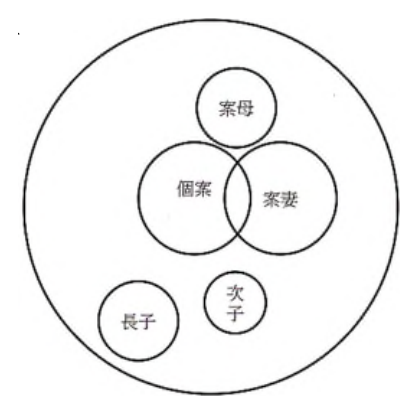

開卷有益 ／
護理師 ／ 精神科與社區衛生護理學 ／ 112 年第 2 次112 年第 2 次護理師精神科與社區衛生護理學試題與答案
這一頁是民國 112 年第 2 次護理師精神科與社區衛生護理學的整份歷屆試題，共 80 題，題目與標準答案出自考選部「國家考試試題及測驗式試題答案」開放資料，其中 80 題附有詳解。以下逐題列出題幹、選項與答案；要計時作答或記錄成績，請用線上練習。
考選部原始場次代碼：112110
線上作答這一科 →
全部 80 題
第 1 題
有關精神衛生護理人員角色功能的敘述，下列何者正確？
（A） 社區照護服務常採用個案管理者（Case Manager）（B） 個案管理者只有護理師可擔任（C） 功能性護理是精神科病房普遍的照護方式（D） 護理計畫不必由主責護理師（Primary Nurse）擬定答案：（A）
詳解與考點 正解：題眼在「社區照護服務」——判準是精神衛生服務以跨專業、持續追蹤與資源連結為核心。個案管理者可整合醫療、復健、家庭與社區資源，正是社區照護常用角色，故選 A。
B：個案管理是跨專業功能，可由具備相關訓練與職責的不同專業人員承擔，不限護理師，故非答案。
C：功能性護理依工作分配，易使同一病人由多人片段照護；精神科較重視持續治療關係，不能稱其為普遍照護方式，故非答案。
D：主責護理制度強調由主責護理師評估並擬定、協調個別化護理計畫，故非答案。
本題考點：個案管理（case management）整合跨專業與社區資源；主責護理（primary nursing）重視照護責任連續性與個別化計畫；精神衛生社區照護以復元與持續支持為導向。
第 2 題
某精神科醫師在門診時，暗示病人有新藥的臨床試驗計畫，藥效比較好，病人基於對醫師的信任並認 為新藥的治療效果較佳，同意簽人體試驗同意書，下列敘述何者正確？
（A） 醫師行為並未違反醫療倫理，因為醫師是為病人著想，病人應該尊重專業（B） 醫師行為並未違反醫療倫理，因為醫療需要進步，應要有病人參與臨床試驗（C） 醫師行為違反醫療倫理，因為並未清楚告知參與新藥之可能風險（D） 醫師行為違反醫療倫理，因為臨床醫師不能進行人體臨床試驗計畫答案：（C）
詳解與考點 正解：題眼在醫師以「藥效比較好」暗示病人參與新藥試驗，且病人因信任而簽署同意書——判準是人體研究的知情同意必須包含可理解的利益、風險、替代選擇與自主決定。題幹未見對可能風險的清楚說明，僅以權威與預期療效引導同意，故選 C。
A：為病人著想與專業身分不能取代病人的自主選擇；研究參與不是病人應服從的醫囑，故非答案。
B：醫療進步確需研究參與者，但研究價值不會免除完整告知與自願同意的要求，故非答案。這是最強誘答——研究確有公共利益，錯在把公共利益當成省略風險告知的理由。
D：臨床醫師可以依法規與研究倫理審查進行人體研究；爭點在知情同意品質，而非醫師身分一概禁止，故非答案。
本題考點：知情同意（informed consent）包含風險、利益、替代方案與自願性；研究倫理（research ethics）應避免權威關係不當影響受試者決定。
第 3 題
將自己內在無法接受的想法、慾望或衝動，歸咎成他人，讓自己減少一份威脅、危險，同時也增加一 份保護的作用，此最可能為下列何種心理防衛機轉？
（A） 外射（projection）（B） 合理化（rationalization）（C） 認同（identification）（D） 反向行為（reaction formation）答案：（A）
詳解與考點 正解：題眼是把自己無法接受的想法、慾望或衝動「歸咎成他人」——此定義直接指向外射防衛機轉；個體藉此把內在衝突外移，暫時減低焦慮，故選 A。
B：合理化是為行為或失敗提出看似合理的解釋，不是把內在衝動歸給他人，故非答案。
C：認同是內化他人的特質、態度或行為以處理焦慮，方向與外移責任相反，故非答案。
D：反向行為是表現出與不可接受衝動相反的態度或行為，不是指控他人具有該衝動，故非答案。
本題考點：外射（projection）是將自身不可接受的感受或衝動歸因於他人；合理化（rationalization）是用理由掩飾動機；反向行為（reaction formation）則以相反表現防衛焦慮。
第 4 題
有關鋰鹽的敘述，下列何者正確？
（A） 每日治療劑量之鋰鹽，建議分成 2～3 次服用（B） 藥物主要由肝臟代謝，服藥階段須注意病人肝功能（C） 急性躁期的血中藥物濃度建議維持在 0.6～1.0 mEq/L（D） 濃度超過 4 mEq/L，須停藥與補充水分，但不建議透析治療答案：（A）
詳解與考點 正解：題眼在「鋰鹽」的服用與監測——判準是其治療與不良反應都需靠規律給藥及腎臟排除狀態追蹤。每日治療劑量分成 2～3 次服用，可減少單次服藥的腸胃不適並維持較穩定暴露，故選 A。
B：鋰鹽主要經腎臟排除，臨床監測重點是腎功能、水分與電解質狀態，不是以肝臟代謝為主，故非答案。
C：急性躁期與維持期的血中濃度目標須依治療階段、個案狀況與實驗室判讀；題述範圍不宜概括作為急性躁期的建議，故非答案。
D：嚴重鋰中毒可能需要積極處置，是否透析須依濃度、症狀與腎功能等評估，不能一概稱不建議透析，故非答案。這是最強誘答——補充水分方向可能正確，但錯在忽略嚴重中毒時仍可能需要透析。
本題考點：鋰鹽（lithium）主要經腎臟排除，應監測腎功能、水分平衡與中毒徵象；治療藥物監測（therapeutic drug monitoring）之目標濃度與嚴重中毒處置具個案及時效差異。
第 5 題
有關抗精神病藥物的敘述，下列何者正確？
（A） 抗精神病藥力效果越強者，錐體外徑症候群作用越明顯（B） 抗精神病藥力效果越強者，自主神經系統副作用越明顯（C） 抗精神病藥物強度越強者，建議的每日口服治療劑量就越高（D） 抗精神病藥物作用越強者，其鎮靜作用強度也是越強答案：（A）
詳解與考點 正解：題眼在比較抗精神病藥物的「藥力效果強弱」——判準是高效價藥物的多巴胺阻斷較強，較容易出現錐體外徑症候群。故選 A。
B：自主神經副作用如姿勢性低血壓、口乾與便祕，通常較常見於低效價且抗膽鹼、抗 α 腎上腺素作用較強的藥物，故非答案。
C：效價強表示達到藥效所需劑量較低，不表示每日口服劑量必然較高，故非答案。
D：鎮靜作用並不與抗精神病效價成正比；低效價藥物反而常有較明顯鎮靜，故非答案。這是最強誘答——「作用強」容易被誤解為各種作用都強，但效價是指主要抗精神病效果所需劑量。
本題考點：抗精神病藥效價（antipsychotic potency）高者較易出現錐體外徑症候群（extrapyramidal symptoms）；低效價藥物較常見鎮靜、抗膽鹼與姿勢性低血壓等副作用。
第 6 題
陳女士，35 歲，診斷雙相情緒障礙症，護理師在詢問家族病史中得知此次是陳女士首次發病，她的母 親也是雙相情緒障礙症的病人，依病因模式，最符合以下何項病因因素？
（A） 潛在因素（predisposing factor）（B） 促發因素（precipitating factor）（C） 續存因素（perpetuating factor）（D） 預後因素（prognostic factor）答案：（A）
詳解與考點 正解：題眼在「首次發病」之前已存在母親罹患雙相情緒障礙症的家族史——判準是病因模式中，發病前即存在、增加易感性的背景條件屬潛在因素，故選 A。
B：促發因素是接近發病時引起或觸發症狀的壓力事件，題幹未提供此類事件，故非答案。
C：續存因素是使症狀持續或惡化的條件，不能以既有家族史直接界定，故非答案。
D：預後因素用於推估疾病未來結果，家族史在本題脈絡是易感性而非預後判斷，故非答案。
本題考點：潛在因素（predisposing factor）是在疾病發生前增加脆弱性的背景；促發因素（precipitating factor）引起發作；續存因素（perpetuating factor）使問題持續。
第 7 題
吳先生，40 歲，診斷情感思覺失調症（SchizoaffectiveDisorder） 。護理師問他喜歡從事什麼休閒活動， 吳先生回答說： 「我喜歡游泳，勇於認錯，知錯能改，善莫大焉，醃肉好吃，但太鹹，我不能吃，因為 我有高血壓。」吳先生有以下那一項症狀？
（A） 言語迂迴（circumstantiality）（B） 答非所問（irrelevant answer）（C） 語無倫次（incoherence）（D） 音韻連結（clang association）答案：（D）
詳解與考點 正解：題眼在回答從「游泳」連到「勇於認錯」，再接「醃肉好吃、太鹹、高血壓」——語句靠字音或音韻相近串接，而非圍繞休閒活動的語意脈絡，屬音韻連結，故選 D。
A：言語迂迴雖有許多枝節，最後仍能回到並回答原先問題；本段談話沒有回到休閒活動，故非答案。
B：答非所問只指出回答與問題無關，不能描述其以相近音韻連鎖的形式特徵，故非答案。這是最強誘答——內容確實偏離問題，但音韻連結能更精確解釋偏離如何發生。
C：語無倫次是語句結構或意義嚴重破碎而難以理解；本段各短句仍可理解，主要異常是聯想方式，故非答案。
本題考點：音韻連結（clang association）以聲音或押韻取代語意連結；言語迂迴（circumstantiality）最終會回到主題；語無倫次（incoherence）則是整體語意難以理解。
第 8 題
護理師展現同理心（empathy） ，下列描述何者最適切？
（A） 完全融入病人的情緒中（B） 不應表露自己的感受給對方（C） 積極傾聽（D） 不須探索病人的潛在需求答案：（C）
詳解與考點 正解：題眼在「同理心」——判準是理解病人的主觀感受，同時保持專業界線並以可回應的方式傳達理解。積極傾聽能蒐集病人的經驗並讓對方感到被理解，故選 C。
A：完全融入病人情緒會失去專業界線，較接近情緒感染而非同理，故非答案。
B：同理並非絕對禁止表露感受；護理人員可在治療性界線內，以適當自我表露促進關係，故非答案。
D：理解病人經驗也需要探索其未明說的需求，不能只停在表面訊息，故非答案。
本題考點：同理心（empathy）是理解並回應病人的主觀經驗；積極傾聽（active listening）包含專注、澄清與反映；治療性界線（therapeutic boundaries）使理解不變成情緒融合。
第 9 題
依據卡普蘭（Caplan）危機理論的敘述，下列何者較適切？
（A） 危機是事件本身，與個案情緒反應無關（B） 危機形成和個案的因應機轉（coping mechanism）無關（C） 個案在崩潰期，最常使用慣有的解決問題方法來因應（D） 當危機問題持續未解決，升高的焦慮可能會導致個人崩潰答案：（D）
詳解與考點 正解：題眼在「危機問題持續未解決」與「升高的焦慮」——卡普蘭危機理論強調，既有因應方式失效時焦慮會上升，若仍不能恢復平衡，可能進入崩潰，故選 D。
A：危機不是事件本身，而是事件超出個人可用資源、引起失衡的主觀反應，故非答案。
B：個案可否動用有效因應機轉會影響是否形成及如何度過危機，故非答案。
C：慣有解決問題方法是在危機初期常先嘗試的方式；崩潰期表示這些方式已失效，故非答案。這是最強誘答——它把初期的因應反應誤放到既有方法已失敗的崩潰階段。
本題考點：危機理論（crisis theory）將危機視為壓力事件與個人因應資源交互造成的失衡；因應機轉（coping mechanism）失效且焦慮持續升高，可能導致崩潰（breakdown）。
第 10 題
下列何項為 BZD 類抗焦慮藥物？
（A） zolpidem（Stilnox® ）（B） lorazepam（Ativan® ）（C） estazolam（Eurodin® ）（D） flunitrazepam（Rohypnol® ）答案：（B）
詳解與考點 正解：題眼在藥物分類「BZD 類抗焦慮藥物」——（B）lorazepam 是臨床常用的 benzodiazepine，作用時間中等、可用於焦慮的短期處置，故選 B。
A：zolpidem 屬非 benzodiazepine 類的鎮靜安眠藥，連 BZD 這個大分類都不屬於，故非答案。
C：estazolam 雖屬 benzodiazepine，臨床上以催眠為主要適應症，不是題幹所問的抗焦慮用藥，故非答案。
D：flunitrazepam 同樣屬 benzodiazepine，臨床定位為鎮靜催眠藥而非抗焦慮藥，故非答案。
本題考點：benzodiazepine（BZD）依藥物特性與臨床用途可分抗焦慮、鎮靜與催眠取向；判準是題幹問哪一種用途——問「抗焦慮」就取 lorazepam，問「安眠」才輪到 estazolam、flunitrazepam，而 zolpidem 連 BZD 都不是。
第 11 題
治療過程中，治療者提供無條件正向關懷與接納，強調人類成長和自我實現的潛能，此為下列那一種 治療法？
（A） 心理分析治療法（Psychoanalysis Therapy）（B） 行為治療法（Behavioral Therapy）（C） 理情治療法（Rational-Emotive Therapy）（D） 個人為中心式治療法（Person-Centered Therapy）答案：（D）
詳解與考點 正解：題眼在「無條件正向關懷與接納」以及「成長和自我實現的潛能」——這是人本取向、個人為中心式治療的核心態度，故選 D。
A：心理分析治療著重無意識衝突、早期經驗與移情的理解，不以無條件正向關懷作為核心技術，故非答案。
B：行為治療著重可觀察行為及增強、消除等學習原理，故非答案。
C：理情治療著重辨識並修正非理性信念，與題幹的人本接納取向不同，故非答案。
本題考點：個人為中心式治療（person-centered therapy）以同理、真誠與無條件正向關懷為基礎；人本取向（humanistic approach）相信個體具有成長與自我實現潛能。
第 12 題
張小姐，診斷為妄想症，因懷疑學校同事向校長告狀阻礙其升遷，而有頻繁投訴教育部及謾罵同事等 行為，由家屬陪同住院治療。下列護理措施，何者最適切？
（A） 同理其妄想所導致的內心感受（B） 協助聯絡教育部，以建立信任感（C） 面質其妄想內容，告知非事實（D） 聯絡學校同事，以釐清事實答案：（A）
詳解與考點 正解：題眼在病人有固定被害妄想且頻繁投訴、謾罵——判準是治療性溝通須回應情緒與安全需求，不能強化或直接對抗妄想內容。同理其因妄想而生的害怕、憤怒等感受，既不認同妄想也能建立關係，故選 A。
B：協助聯絡教育部會把妄想當作事實並參與其行動，屬強化妄想，故非答案。
C：直接面質並宣告非事實易引發防衛與不信任，無助於急性期關係建立，故非答案。這是最強誘答——澄清現實方向沒有錯，但時機錯在先直接否定病人堅信的內容。
D：聯絡同事查證會使護理人員捲入妄想系統，也可能侵犯他人隱私，故非答案。
本題考點：妄想照護（delusion care）應承認感受、不爭辯或強化妄想內容；治療性溝通（therapeutic communication）先建立信任與安全，再提供簡明現實導向。
第 13 題
下列有關精神疾病盛行率的敘述，何者正確？
（A） 物質使用障礙症是女性最普遍的精神疾病（B） 自閉症類群障礙症的盛行率男性和女性大約相當（C） 思覺失調症的盛行率男性和女性大約相當（D） 雙相情緒障礙症的盛行率男性大於女性答案：（C）
詳解與考點 正解：題眼在比較不同精神疾病的性別盛行率——思覺失調症的整體盛行率在男性與女性大致相近；性別差異較常表現在發病年齡與病程特徵，故選 C。
A：物質使用障礙症整體上較常見於男性，不能稱為女性最普遍的精神疾病，故非答案。
B：自閉症類群障礙症的診斷盛行率通常呈現男性高於女性，故非答案。
D：雙相情緒障礙症整體盛行率並非男性明顯大於女性，故非答案。這是最強誘答——不同性別的躁期表現與就醫型態可能不同，但不能據此推成男性盛行率較高。
本題考點：盛行率（prevalence）描述特定期間或時點既有病例比例；思覺失調症（schizophrenia）兩性整體盛行率大致相近；自閉症類群障礙症（autism spectrum disorder）診斷盛行率較常見男性高於女性。
第 14 題
個別心理治療的主要目的與原則，適當的措施包括下列那些項目？①鼓勵病人自我表露 ②修正阻礙 改變的阻力 ③協助了解疾病診斷 ④提供社區就業資訊
（A） ①②（B） ②③（C） ③④（D） ①④答案：（A）
詳解與考點 正解：題眼在「個別心理治療」的主要目的與原則——其工作焦點是協助病人安全自我表露，並辨識、修正阻礙心理改變的阻力；①②成立，故選 A。
B：②正確，但③協助了解疾病診斷較偏向疾病衛教，非個別心理治療的主要治療性目標，故非答案。
C：③屬衛教，④提供社區就業資訊屬資源轉介或復健服務，均非此治療的主要原則，故非答案。
D：①正確，但④是社會復健與個案管理工作，不是個別心理治療的核心措施，故非答案。這是最強誘答——就業資訊確有助病人生活，但服務有益不等於它就是心理治療技術。
本題考點：個別心理治療（individual psychotherapy）促進自我表露與洞察，並處理阻力（resistance）；疾病衛教（psychoeducation）與社區資源轉介（community referral）屬不同但可互補的服務。
第 15 題
精神科急性病房為維持治療性的硬體環境，須符合下列那項原則？
（A） 禁止擺設私人物品，以維持環境的一致性（B） 為病人安全，病房不得裝設窗簾（C） 為維護病人隱私，保護室不應設置玻璃窗（D） 設置公共電話，以供病人對外聯繫之用答案：（D）
詳解與考點 正解：題眼在「精神科急性病房」的治療性硬體環境——判準是同時維護安全、隱私、正常化生活與和外界適度聯繫。設置公共電話能讓病人維持必要的對外聯繫與社會支持，故選 D。
A：適度擺設私人物品可增加熟悉感、個別性與住院生活的正常化；一律禁止不符合治療性環境原則，故非答案。
B：窗簾可在兼顧觀察與防自傷的設計下提供隱私，不能僅以安全為由全面禁止，故非答案。
C：保護室需兼顧病人安全與工作人員觀察；設置可觀察窗有助及早發現危險狀況，故非答案。這是最強誘答——隱私重要，但急性保護處置中安全監測優先，不能因隱私而完全阻斷觀察。
本題考點：治療性環境（therapeutic milieu）兼顧安全、隱私、正常化與社會支持；急性精神病房的環境安全（environmental safety）須保有適當觀察能力。
第 16 題
有關家庭治療的護理措施，下列何者最適宜？
（A） 當下解決問題，不可安排家庭作業（B） 不需要訂定目標（C） 著重討論過去情境所發生的事物（D） 促進有效的溝通答案：（D）
詳解與考點 正解：題眼在「家庭治療」——判準是把家庭視為互動系統，協助成員建立可持續的溝通與問題解決方式。促進有效溝通能改善彼此理解與互動模式，故選 D。
A：家庭治療可安排家庭作業，讓成員在會談外練習新的互動方式；也不要求每次當下完全解決問題，故非答案。
B：治療需與家庭共同訂定具體、可評估的目標，沒有目標難以聚焦與評值，故非答案。
C：過去經驗可以討論，但家庭治療著重目前互動與可改變的模式，不能只停留在過去情境，故非答案。
本題考點：家庭治療（family therapy）以系統互動為焦點；有效溝通（effective communication）與共同目標設定（goal setting）可協助家庭改變互動模式；家庭作業（family homework）用於會談外練習。
第 17 題
劉先生診斷妄想症（Delusional Disorder） ，堅定地認為太太、兒子與鄰居們意圖要下毒害他，下列敘 述何者正確？
（A） 出現與現實生活有關的妄想（B） 有明顯的怪異行為（C） 與腦部功能無關（D） 與人格特質無關答案：（A）
詳解與考點 正解：題眼在病人堅信太太、兒子、鄰居下毒害他——內容雖錯誤，但屬日常生活中可能發生的被害主題，而不是全然不可能、荒誕的內容，符合妄想症常見的非怪異性妄想，故選 A。
B：妄想症病人的行為通常可維持相對組織性，不以明顯怪異行為為主要特徵，故非答案。
C：妄想症的診斷與評估須排除物質、疾病或其他腦部功能因素；不能斷言與腦部功能無關，故非答案。
D：人格特質、人際敏感度與生活壓力都可能和病程相關，不能稱完全無關，故非答案。
本題考點：妄想症（delusional disorder）以持續妄想為核心，常見被害、嫉妒或誇大等與現實生活相關的非怪異性內容；鑑別診斷（differential diagnosis）須評估物質、身體與神經認知因素。
第 18 題
護理師與憂鬱症病人護病關係的建立，下列何者正確？①同理病人的感受和想法 ②給予簡單且直接 的訊息 ③採取督促方式陪伴病人 ④協助表達其想法和感覺
（A） ①②③（B） ①②④（C） ①③④（D） ②③④答案：（B）
詳解與考點 正解：題眼在「憂鬱症」病人的護病關係——判準是以同理、簡短清楚訊息及協助表達感受降低負荷、維持連結。①同理感受和想法、②給予簡單直接訊息、④協助表達想法和感覺均適切；③採督促方式陪伴容易增加壓力，故選 B。
A：①②正確，但包含③；對憂鬱症病人以督促逼迫取代支持，可能增加無力感與挫折，故非答案。
C：①④正確，但同樣包含③，故非答案。
D：②④正確，但包含③，故非答案。這是最強誘答——憂鬱病人需要陪伴與日常支持，不等於應以催促施壓的方式陪伴。
本題考點：憂鬱症護理（depression nursing）採同理與支持性溝通；簡明直接訊息（clear and direct communication）可降低認知負荷；情緒表達（emotional expression）有助於治療性關係建立。
第 19 題
武先生，28 歲，診斷為雙相情緒障礙症，目前為躁症發作，渴望有女朋友，向護理師說： 「你很漂亮， 我可以當你的男朋友。」下列何項護理措施最適宜？
（A） 表明二人為護病關係（B） 不予理會（C） 「謝謝你的讚美」（D） 「謝謝，我有男朋友了」答案：（A）
詳解與考點 正解：題眼在躁症發作病人以「可以當你的男朋友」跨越護病界線——判準是治療性關係須維持清楚、專業的角色界線。躁症時可能出現衝動、人際界線鬆動或性暗示言行；護理師應以平穩且直接的方式說明雙方是護病關係，既設定界線，也不羞辱病人，故選 A。
B：不予理會沒有讓病人知道可接受的互動界線，也失去及早處理不適當言行的機會，故非答案。
C：「謝謝你的讚美」看似禮貌，卻可能被病人解讀為接受或鼓勵親密互動。最強誘答的錯誤在於只回應稱讚，未釐清護病關係的界線。
D：以自己的感情狀態回應會把焦點移到護理師私生活，且不能建立專業界線，故非答案。
本題考點：治療性關係（therapeutic relationship）須有角色界線；界線設定（limit setting）要清楚、平穩且不帶羞辱；躁症（mania）的人際介入重點是降低衝動與維持安全互動。
第 20 題
雙相情緒障礙症（Bipolar Disorder）的治療原則，下列何項敘述不適切？
（A） 情緒穩定劑穩定情緒起伏（B） 可合併使用抗精神病藥物治療激躁症狀（C） 認知行為治療找出不理性想法（D） 輕躁症只需心理治療答案：（D）
詳解與考點 正解：題眼在「雙相情緒障礙症」與「不適切」——判準是輕躁症仍屬情緒發作，治療需依症狀、功能受損與復發風險整體評估，不能一概只做心理治療。心理治療可協助辨識壓力、規律作息與提升治療遵從性，但不能取代必要的藥物評估與情緒穩定治療，故選 D。
A：情緒穩定劑可用於降低情緒高低起伏及預防復發，符合雙相情緒障礙症的治療原則，故非答案。
B：躁症或激躁症狀明顯時，臨床上可合併抗精神病藥物以協助控制症狀，故非答案。
C：認知行為治療可協助病人辨識不理性想法與因應模式，作為心理社會治療的一環，故非答案。
本題考點：雙相情緒障礙症（bipolar disorder）採藥物與心理社會治療整合；情緒穩定劑（mood stabilizer）著重情緒發作與復發預防；輕躁症（hypomania）不可因症狀較輕而一概排除藥物評估。
第 21 題
陳同學，18 歲，診斷為思覺失調症，父母擔心服藥會影響其學科考試成績。下列護理措施，何者最適 切？
（A） 告知家屬考試前可以先暫時停藥（B） 引導家屬了解服藥的重要性（C） 告知家屬症狀出現再服藥即可（D） 教導家屬使用轉移注意力來代替藥物使用答案：（B）
詳解與考點 正解：題眼在思覺失調症病人及父母因考試擔心服藥影響成績——判準是規律治療能降低症狀惡化與復發風險，先建立家屬對用藥重要性的理解。護理師應協助家屬與病人討論服藥疑慮、觀察副作用並與醫療團隊溝通，而非自行改變治療，故選 B。
A：考試前自行暫停藥物可能造成症狀復發或功能更受影響，違反規律治療與共同決策原則，故非答案。
C：等症狀出現才服藥是把治療延後到復發後，無法達成穩定症狀與預防復發的目的，故非答案。
D：轉移注意力可作為部分壓力因應技巧，不能替代抗精神病藥物的治療。這是最強誘答——方向是提供支持，但錯在把輔助方法當成藥物的替代品。
本題考點：思覺失調症（schizophrenia）以規律治療降低復發；服藥遵從性（medication adherence）須處理病人與家屬的疑慮；共同決策（shared decision-making）是副作用與治療調整的適切途徑。
第 22 題
承上題，陳同學及父母擔心疾病又再復發，顯得焦慮不安。下列護理措施，何者最不適切？
（A） 教導病人與疾病共存的技巧（B） 教導病人壓力紓解的方法（C） 教導家屬日夜督促病人準備考試的方法（D） 教導家屬預防疾病復發的方法答案：（C）
詳解與考點 正解：題眼承接前題的思覺失調症、考試壓力與對復發的焦慮，並問「最不適切」——判準是復發預防應減少過度壓力、建立可持續的自我照護與家屬支持。要求家屬日夜督促準備考試會增加監控感與壓力，破壞睡眠與壓力調適，反而可能提高復發風險，故 C 為應選項。
A：教導病人與疾病共存的技巧，有助於辨識症狀、維持生活功能與長期自我管理，故非答案。
B：壓力紓解方法可降低壓力對症狀穩定的影響，符合復發預防，故非答案。
D：教導家屬辨識復發警訊、支持規律治療與適時求助，是復發預防的重要措施，故非答案。
本題考點：復發預防（relapse prevention）重視規律治療、壓力管理與早期警訊；家庭心理教育（family psychoeducation）是支持而非日夜監控；壓力－脆弱性模式（stress-vulnerability model）說明過度壓力可能促發症狀。
第 23 題
邊緣型人格障礙症病人有可能將護理師理想化或是言詞貶損護理師，有關此臨床特徵的敘述，下列何 項最適切？
（A） 無法感受到對懲罰或是痛苦的恐懼（B） 冷漠無情，不在乎傷害他人（C） 強烈的自大以及對他人缺乏同理心（D） 以全好和全壞二分法的觀點看待人際關係答案：（D）
詳解與考點 正解：題眼在病人把護理師「理想化」後又「言詞貶損」——這是對人際關係採全好或全壞二分法的分裂表現。邊緣型人格障礙症病人難以整合他人同時具有優點與缺點的複雜形象，可能在理想化與貶抑之間快速轉換，故選 D。
A：無法感受懲罰或痛苦的恐懼較接近反社會人格特質，不能解釋理想化與貶抑交替，故非答案。
B：冷漠無情、不在乎傷害他人是反社會人格障礙症的特徵，故非答案。
C：強烈自大及缺乏同理心較符合自戀型人格障礙症的核心特徵，故非答案。
本題考點：邊緣型人格障礙症（borderline personality disorder）常見分裂（splitting）防衛；理想化與貶抑（idealization and devaluation）反映全好全壞的二分法；人格障礙鑑別須由核心人際模式判斷。
第 24 題
有關病人以身體症狀帶來附帶收穫（secondary gain）的敘述，下列何者最適切？
（A） 病人能增加病識感及服藥意願（B） 滿足病人依賴的需求，減輕需負的責任（C） 病人的記憶力與定向感下降（D） 病人能增加社會互動的意願答案：（B）
詳解與考點 正解：題眼在「身體症狀帶來附帶收穫」——判準是次級獲益指疾病或症狀使病人從外在環境獲得的利益，例如免除責任、得到照顧或滿足依賴需求。這些獲益不等於病人故意捏造症狀，而是症狀在生活中被強化的結果，故選 B。
A：病識感與服藥意願是治療目標，不是由身體症狀獲得的外在利益，故非答案。
C：記憶力與定向感下降是認知功能改變，不能定義次級獲益，故非答案。
D：社會互動意願增加不是次級獲益的典型核心；關鍵在於症狀可減輕責任或取得照顧，故非答案。
本題考點：次級獲益（secondary gain）是疾病帶來的外在利益；疾病行為（illness behavior）可能受環境反應強化；依賴需求（dependency needs）可因被照顧而獲得滿足。
第 25 題
陳先生，近三個月多次忽然間感到胸痛、心悸、發抖、透不過氣，失去現實感等症狀，可在幾分鐘後 緩解，經各項身體檢查顯示並無生理疾病，但之後陳先生仍持續擔心症狀會再度發作並死亡。下列敘 述何者為陳先生最可能的診斷？
（A） 創傷後壓力症（B） 恐慌症（C） 廣泛性焦慮症（D） 社交畏懼症答案：（B）
詳解與考點 正解：題眼在反覆「忽然間」出現胸痛、心悸、發抖、呼吸困難與失去現實感，數分鐘後緩解，且事後持續害怕再發作——這組突發強烈症狀加上預期焦慮，符合恐慌症。身體檢查未見生理疾病後，仍須以整體臨床評估排除其他原因；依題幹線索最可能為恐慌症，故選 B。
A：創傷後壓力症需有創傷事件，並以侵入性回憶、逃避及警覺性增加等症狀為主，題幹未呈現此模式，故非答案。
C：廣泛性焦慮症是持續、廣泛的過度擔憂，不以數分鐘內達高峰的突發恐慌發作為主要表現，故非答案。
D：社交畏懼症的焦慮核心是害怕社交情境中被負面評價，題幹沒有特定社交觸發情境，故非答案。
本題考點：恐慌症（panic disorder）有反覆恐慌發作與對再發作的持續擔憂；恐慌發作（panic attack）常有自律神經與失真感症狀；預期焦慮（anticipatory anxiety）有助與單次恐慌發作區辨。
第 26 題
王女士，36 歲，半年來經常感到坐立不安、肌肉緊繃、容易疲勞，入睡困難，總是過度擔心工作或家 庭會發生問題。王女士最有可能的問題，為下列何者？
（A） 慮病症（B） 畏懼症（C） 恐慌症（D） 廣泛性焦慮症答案：（D）
詳解與考點 正解：題眼在半年來對工作或家庭持續過度擔心，伴隨坐立不安、肌肉緊繃、疲勞及失眠——判準是焦慮是否廣泛、持續且合併身心症狀。王女士的焦慮並未限於單一刺激，也不是突然短暫發作，最符合廣泛性焦慮症，故選 D。
A：慮病症的核心是持續擔心罹患嚴重疾病，題幹焦點在工作與家庭的廣泛憂慮，故非答案。
B：畏懼症是對特定物體、情境或社交場合產生不成比例的恐懼，題幹未見特定恐懼對象，故非答案。
C：恐慌症以反覆突發的恐慌發作及對再發作的害怕為主，與本題長期廣泛擔憂不同，故非答案。
本題考點：廣泛性焦慮症（generalized anxiety disorder）是持續且難以控制的廣泛憂慮；焦慮症狀（anxiety symptoms）常包含緊繃、疲勞與睡眠困難；鑑別診斷（differential diagnosis）要看焦慮是特定、突發或廣泛持續。
第 27 題
有關酒精使用障礙症，下列敘述何者錯誤？
（A） 酒精主要在小腸吸收，若喝酒又喝水，將增加酒精在體內的吸收（B） 酒精戒斷的個案在戒斷後，會產生酒精戒斷譫妄（delirium tremor）（C） 常因營養不良及維生素 E 缺乏，而發生周圍神經病變（D） 酒精戒斷症狀會出現焦慮、手抖增加、流汗等症狀答案：（C）
詳解與考點 正解：題眼在酒精使用障礙症與「何者錯誤」——判準是長期飲酒的營養缺乏相關神經併發症。酒精使用障礙症常因營養不良及維生素 B1（thiamine）缺乏造成周邊神經病變與其他神經問題；把關鍵營養素說成維生素 E 不正確，故（C）為應選項。
A：酒精主要在小腸吸收，飲酒同時攝取水分會稀釋胃內酒精濃度、加速胃排空，使酒精抵達小腸的速率上升，吸收因而增加，此敘述正確，故非答案。
B：嚴重酒精戒斷可能進展為酒精戒斷譫妄，須密切觀察意識、自律神經症狀與安全，敘述正確，故非答案。
D：焦慮、手抖與出汗是常見的酒精戒斷症狀，敘述正確，故非答案。
本題考點：酒精使用障礙症（alcohol use disorder）可伴隨營養不良；維生素 B1（thiamine）缺乏與酒精相關神經併發症有關；酒精戒斷（alcohol withdrawal）須警覺譫妄與自律神經亢進。
第 28 題
鴉片類的物質其作用越短效，引起的戒斷症狀發作及持續時間的通則為何？
（A） 引起的戒斷症狀越長愈強（B） 引起的戒斷症狀越短愈強（C） 引起的戒斷症狀越長愈輕微（D） 引起的戒斷症狀越短愈輕微答案：（B）
詳解與考點 正解：題眼在鴉片類物質「作用越短效」——判準是藥物濃度下降速度越快，身體越快出現戒斷，症狀通常也越集中而強烈。短效鴉片類停止使用後，血中作用下降較迅速，會使戒斷症狀較早出現、歷時較短但較強，故選 B。
A：短效物質的戒斷不以持續較長為通則，故非答案。
C：把短效物質的戒斷型態同時說成較長且輕微，與濃度快速下降的原理不符，故非答案。
D：短效物質的症狀可較短，但強度通常較高；此項錯在把強度方向顛倒。
本題考點：鴉片類（opioids）戒斷與藥物作用時間相關；短效藥物（short-acting drug）常有較早、較短且較強的戒斷；戒斷症候群（withdrawal syndrome）評估須看時程與強度。
第 29 題
有關物質使用障礙症的護理措施中，下列何者較不適切？
（A） 協助物質使用障礙症的病人，核心議題是其個人對於問題的覺察能力（B） 增加個案的現實感，不要與個案爭辯其妄想內容，並同理其害怕、擔心（C） 鼓勵病人使用否認或隔離的心理機轉，以逃避心理壓力（D） 討論戒除的可行方法，協助訂定合適的目標，並評值其成效答案：（C）
詳解與考點 正解：題眼在物質使用障礙症護理措施與「較不適切」——判準是治療須增加問題覺察、面對使用行為及建立可行改變目標。鼓勵否認或隔離等防衛機轉，會使病人逃避壓力與使用後果，阻礙動機建立和復發預防，故 C 為應選項。
A：協助病人覺察物質使用造成的影響，是促進改變動機的核心工作，故非答案。
B：若病人有妄想或強烈害怕，護理師宜同理感受、不與妄想內容爭辯，並協助回到可驗證的現實，故非答案。
D：共同討論戒除方法、訂定可達成目標並評值成效，符合改變行為與復發預防原則，故非答案。
本題考點：物質使用障礙症（substance use disorder）護理重視問題覺察；動機式晤談（motivational interviewing）協助探索改變可能；復發預防（relapse prevention）須以可行目標與持續評值支持。
第 30 題
下列有關閱讀障礙（Dyslexia）之敘述，何者錯誤？
（A） 理解文字有困難（B） 通常因智力偏低，導致全面性的學習障礙（C） 書寫表達錯誤（D） 閱讀有錯誤答案：（B）
詳解與考點 正解：題眼在閱讀障礙與「何者錯誤」——判準是特定學習障礙的困難發生於特定學習技能，不等同整體智力偏低。閱讀障礙病人可有正常智力與適當教育機會，主要困難在文字辨識、閱讀流暢度或理解，故 B 為應選項。
A：理解文字困難可見於閱讀障礙的閱讀理解問題，故非答案。
C：書寫表達錯誤可與閱讀及書寫相關的特定學習困難並存，故非答案。
D：閱讀時字詞辨識或流暢度出錯是閱讀障礙的典型表現，故非答案。
本題考點：閱讀障礙（dyslexia）屬特定學習障礙（specific learning disorder）；特定技能缺損不等於智能不足（intellectual disability）；閱讀評估（reading assessment）須區分辨識、流暢度與理解。
第 31 題
在某幼稚園就讀大班的林小弟，平時表現良好，只是有些好動，最近眼睛眨個不停，嘴角不自主抽動， 甚至搖頭，頸部晃個不停，樣子十分難看，同學都開始嘲笑他。上述表現最可能為下列何者？
（A） 智能不足（Intellectural Disabilities）（B） 雙相情緒障礙症（Bipolar Disorder）（C） 注意力不足／過動症（Attention-Deficit/Hyperactivity Disorders,ADHD）（D） 妥瑞氏症（Tourette’s Disorder）答案：（D）
詳解與考點 正解：題眼在反覆眼睛眨動、嘴角抽動、搖頭及頸部晃動等不自主動作——判準是多種動作性抽動的表現。這些動作並非單純好動或故意搗亂，而是抽動症狀；依題幹所示多部位、反覆的不自主抽動，最可能為妥瑞氏症，故選 D。
A：智能不足的核心是整體智能與適應功能受限，不能以突然出現多種不自主抽動作為主要判斷依據，故非答案。
B：雙相情緒障礙症以情緒高昂或低落發作為主，題幹沒有典型情緒發作線索，故非答案。
C：注意力不足／過動症可有好動與注意力困難，卻不能解釋眼、口與頸部反覆不自主抽動。這是最強誘答——題幹提到「好動」，但決定診斷的是後續的抽動線索。
本題考點：妥瑞氏症（Tourette’s disorder）以動作抽動（motor tics）為重要表現；抽動（tic）是不自主、反覆且可變化的動作或發聲；鑑別診斷（differential diagnosis）要抓住核心症狀而非一般好動。
第 32 題
關於譫妄及失智症，下列敘述何者最適切？
（A） 譫妄病人症狀通常為漸進性發作（B） 譫妄病人通常腦波正常，出現腦回萎縮、腦室擴大（C） 失智症病人的意識狀態，經常日夜波動變化大（D） 失智症初期會有立即性及短期記憶力障礙答案：（D）
詳解與考點 正解：題眼在比較譫妄與失智症——判準是發作速度、意識波動及早期認知缺損的型態。失智症通常呈慢性漸進性認知退化，早期常先影響近期與短期記憶；題目所述立即性及短期記憶障礙符合此方向，故選 D。
A：譫妄通常急性或亞急性發作，症狀可在短時間內變動，不是漸進性發作，故非答案。
B：譫妄常與急性生理因素相關，可能出現腦波瀰漫性變慢；腦萎縮與腦室擴大較非其典型描述，故非答案。
C：意識狀態日夜大幅波動是譫妄的典型特徵；失智症早期的意識通常較清醒，故非答案。
本題考點：譫妄（delirium）多為急性發作且注意力、意識波動；失智症（dementia）常為慢性漸進認知退化；短期記憶（short-term memory）障礙是失智症早期常見線索。
第 33 題
有關老年憂鬱症的敘述，下列何者最不適切？
（A） 與血清素神經傳導物質分泌減少有關（B） 會因中風、心血管疾病引發憂鬱症（C） 盛行率常被低估（D） 憂鬱症狀緩解時，須立即停藥答案：（D）
詳解與考點 正解：題眼在老年憂鬱症與「最不適切」——判準是憂鬱症狀緩解不代表可立即停藥，維持治療與減量須經醫療團隊依復發風險評估。突然停藥可能造成停藥不適或症狀復燃，因此「立即停藥」不適切，故 D 為應選項。
A：血清素神經傳導功能改變與憂鬱症的病理機轉有關，故非答案。
B：中風及心血管疾病等身體疾病可能與老年憂鬱症共病或促發有關，故非答案。
C：老年人的憂鬱症狀可能被身體不適、認知改變或老化迷思掩蓋，使盛行率被低估，故非答案。
本題考點：老年憂鬱症（late-life depression）須辨識身心共病；維持治療（maintenance treatment）可降低復發風險；抗憂鬱藥物（antidepressants）的調整應由醫療團隊個別評估。
第 34 題
江先生為思覺失調症病人，出院返家後，常干擾社區居民，但不至於傷害他人，家屬表示病人不願意 配合服藥與規律返診，照顧困難。依此情境，最適合提供江先生下列何種精神醫療服務？
（A） 強制住院治療（B） 居家治療（C） 精神護理之家（D） 住宿型康復之家答案：（B）
詳解與考點 正解：題眼在出院後干擾社區、未達傷害他人程度，且拒藥、未規律返診、家屬照顧困難——判準是病人需要在原居住環境中維持治療連結，而非立即以強制或住宿機構處置。居家治療可將護理與治療支持帶入生活場域，協助病人服藥、返診、症狀觀察及家屬因應，故選 B。
A：強制住院應以急性危險或嚴重功能失調等必要條件審慎評估；題幹明示未至傷害他人，不能只因拒藥與干擾社區就優先選擇，故非答案。
C：精神護理之家提供較高生活照護需求的住宿支持；本題優先問題是社區中治療不遵從與家屬支持，較適合先以居家服務介入，故非答案。
D：住宿型康復之家著重社區住宿與復健生活支持，不能直接取代當前在家中的治療外展需求，故非答案。
本題考點：居家治療（home treatment）可維繫社區中精神醫療；社區精神醫療（community mental health care）依病人危險性、功能與支持需求安排；最少限制原則（least restrictive alternative）優先採與需求相稱的服務。
第 35 題
陳女士，有自殺病史，近一個月終日以淚洗面，並向家人表示不想活在世間，而被家人送至精神科接 受住院治療。此時，針對陳女士的護理措施最優先的是：
（A） 建立治療性人際關係（B） 安排家屬與個案討論未來生活安置（C） 提供安靜的環境，讓陳女士好好休息（D） 對陳女士採取自殺防範措施答案：（D）
詳解與考點 正解：題眼在有自殺病史、持續落淚且明確表示不想活——這是立即自殺風險訊號。依三層優先序，第 2 層安全優於舒適、關係建立與未來安排；應先採取自殺防範措施，移除危險物、加強觀察並持續評估自殺意念與計畫，故選 D。
A：建立治療性人際關係很重要，但在明確自殺風險下，安全措施必須先行，故非答案。
B：未來生活安置可於安全穩定後與家屬共同討論，現在先處理自傷危險，故非答案。
C：安靜環境可減少刺激，但不能單獨防止自殺行為。這是最強誘答——方向是安撫病人，錯在未直接處理當下的致命安全風險。
本題考點：自殺風險評估（suicide risk assessment）要辨識意念、病史與當下危險；自殺防範（suicide precautions）屬立即安全處置；優先序（priority setting）中安全高於舒適與心理社會介入。
第 36 題
有關災難護理的敘述，下列何者最不適切？
（A） 救難人員也是災難後照護關懷的對象（B） 「二度災難」是指為了申請各類補助而遭遇到的各種困難（C） 要求災民回到事故現場參與情境暴露法治療（D） 考慮災民的文化差異提供照護答案：（C）
詳解與考點 正解：題眼在災難護理與「最不適切」——判準是災後心理介入必須尊重個人準備度、安全感與文化脈絡，不能強迫重返創傷現場。情境暴露治療需在完整評估、知情合作與專業治療計畫下進行；要求災民回到現場可能造成再次創傷，故 C 為應選項。
A：救難人員也可能承受創傷暴露、疲憊與哀傷，是災後照護關懷的重要對象，故非答案。
B：「二度災難」可指災民在求助、補助或行政過程中遭遇的挫折與再度傷害，故非答案。
D：依災民的文化、信念與社區脈絡調整照護，有助建立可接受的支持，故非答案。
本題考點：災難護理（disaster nursing）重視心理急救與安全感；創傷知情照護（trauma-informed care）避免強迫暴露與再次創傷；文化敏感性（cultural sensitivity）是災後支持的重要原則。
第 37 題
有關急性精神科病房暴力的敘述，下列何者最適切？
（A） 口頭攻擊常是暴力行為的先兆（B） 女性工作人員最常遭到病人的暴力攻擊（C） 藥物處置是處理暴力行為最有效的方法（D） 約束病人後，護理師至少每一小時評估一次病人情況答案：（A）
詳解與考點 正解：題眼在急性精神科病房的暴力——判準是暴力通常有可觀察的升高徵兆，及早辨識並以降溫介入優先。口頭攻擊、威脅、音量升高或激動可作為暴力行為的前兆，護理人員應及時評估風險、維持距離並啟動團隊安全措施，故選 A。
B：暴力風險不能以工作人員性別作為單一判斷，應依病人當下言行、病史與環境刺激評估，故非答案。
C：藥物可在必要時協助降低激躁，但不是處理暴力唯一或必然最有效的方法；去激化、環境控制與團隊安全同樣重要，故非答案。
D：約束後須依病人狀況持續且密集監測生理、心理與肢體安全，不能只用「至少每小時」概括為適切處置，故非答案。
本題考點：暴力風險評估（violence risk assessment）要早期辨識口頭攻擊等警訊；去激化（de-escalation）優先於限制性措施；約束（restraint）期間須持續監測並保障病人安全與尊嚴。
第 38 題
社區精神復健中心的服務對象之收案條件，下列何者正確？
（A） 個案符合精神疾病診斷且精神症狀穩定，可主動服藥及規律門診追蹤者（B） 個案符合精神疾病診斷且精神症狀穩定，但症狀呈現慢性化，需生活照顧者（C） 為了考量個案往返復健中心的安全，一定要有家屬接送（D） 為推展業務，任何病人有職業功能之訓練需求，皆可以為收案對象答案：（A）
詳解與考點 正解：題眼在社區精神復健中心的「收案條件」——判準是服務以症狀相對穩定、能在社區中主動參與復健及維持門診治療的病人為主。符合精神疾病診斷、症狀穩定且可主動服藥、規律門診者，具備參與日間復健與功能訓練的基本條件，故選 A。
B：慢性化且需要生活照顧的病人，核心需求較偏向住宿或生活支持，不一定符合以社區復健訓練為主的收案條件，故非答案。
C：往返安全可個別評估交通與支持資源，並非一律必須由家屬接送，故非答案。
D：收案仍須符合服務對象、精神症狀穩定度及參與能力等條件，不能因有職業訓練需求就不限診斷與狀態全部收案，故非答案。
本題考點：社區精神復健（community psychiatric rehabilitation）著重生活與職業功能恢復；收案評估（admission assessment）要看症狀穩定與參與能力；復元導向（recovery-oriented care）以社區參與及持續治療支持為基礎。
第 39 題
王先生，診斷為思覺失調症，使用抗精神病藥物 clozapine（Clozaril® ） ，用藥前體重、血壓及空腹血糖 在正常範圍，第 8 週時體重上升 10%，第 12 週時血糖驗出 130 mg/dL，目前精神症狀及認知功能明 顯改善，且已回到職場。下列敘述何者最適切？
（A） 病人服用 clozapine 時，出現血糖高，不需過度緊張，也不需再追蹤處理（B） 造成病人血糖高的因素與其年齡、運動程度、家族史有關，與藥物無關（C） clozapine 屬於第一代抗精神病藥物，導致代謝症候群的可能性低（D） 病人精神症狀及認知功能已經改善，雖出現血糖問題，不宜驟然停藥答案：（D）
詳解與考點 正解：題眼在使用 clozapine 後體重上升 10%、空腹血糖升至 130 mg/dL，但精神症狀與認知功能明顯改善——這是第二代抗精神病藥物的代謝副作用與停藥風險的權衡。clozapine 可造成體重增加與糖脂代謝異常，應持續追蹤並介入生活型態；但病人已獲明顯療效時，驟然停藥可能使症狀復發，調整藥物須由治療團隊審慎評估，故選 D。
A：出現血糖上升仍須追蹤體重、血糖與其他代謝指標，並提供營養、運動等護理指導；忽略異常會延誤代謝風險控制，故非答案。
B：年齡、活動量與家族史確會影響血糖，但用藥後才出現體重與血糖變化，藥物是重要可修正因素，不能排除其關聯。
C：clozapine 是第二代抗精神病藥物，代謝症候群風險並不低。這是最強誘答——「第二代」容易被誤解成副作用較少，但其優勢主要在部分錐體外症狀與療效，代謝監測仍不可少。
本題考點：clozapine 的代謝監測（metabolic monitoring）包含體重與血糖等指標；第二代抗精神病藥物（second-generation antipsychotics）可能造成代謝症候群；藥物調整須兼顧復發風險與副作用控制。
第 40 題
承上題，王先生服用 clozapine 藥物時，下列何者為首要健康風險控制預防措施？
（A） 營養、運動諮詢與追蹤代謝症候群相關數據（B） 蛋白質控制之飲食管理（C） 低鈉飲食之血壓控制（D） 危機管理答案：（A）
詳解與考點 正解：題眼承接前題的 clozapine 治療後體重增加與血糖升高——首要健康風險是代謝症候群，而非單一營養素或血壓問題。應以營養與運動諮詢降低可修正風險，並定期追蹤體重、血壓、血糖及血脂等代謝相關數據，才能同時保留精神症狀改善的治療效益，故選 A。
B：蛋白質控制不是 clozapine 相關代謝異常的核心處置；此題應優先處理整體熱量、活動與代謝指標。
C：低鈉飲食可用於特定血壓管理情境，但前題最明顯的新問題是體重與血糖上升，不能以單一血壓措施取代完整代謝風險控制。
D：危機管理適用於急性自傷、傷人或嚴重精神症狀失控等安全風險；病人目前已回到職場，題幹優先訊號是藥物相關代謝風險。
本題考點：代謝症候群（metabolic syndrome）須採生活型態介入與連續監測；健康促進（health promotion）應針對可修正危險因子；護理優先序以題幹當前風險決定。
第 41 題
根據聯合國所訂定之 2030 永續發展目標（SustainableDevelopmentGoals） ，消除可預防的新生兒以及 五歲以下兒童死亡率，為下列那一項目標的範疇？
（A） 減少國內及國家間的健康不平等（B） 實現性別平等，並賦予婦女權力（C） 確保永續消費及生產模式（D） 確保健康及促進各年齡層的福祉答案：（D）
詳解與考點 正解：題眼在「消除可預防的新生兒以及五歲以下兒童死亡率」——這直接屬於健康與福祉的全球目標。永續發展目標中，確保健康生活、促進各年齡層福祉的目標涵蓋孕產婦、新生兒與兒童可預防死亡的降低，故選 D。
A：減少不平等著重社會、經濟與健康資源落差；雖能間接改善兒童健康，並非題述死亡率目標的直接歸屬。
B：性別平等著重婦女與女孩的權利及機會，和母嬰健康相互關聯，但不是題幹所述兒童死亡率的主要目標分類。
C：永續消費及生產模式關注資源使用、廢棄物與生產鏈，不是兒童死亡防治的直接架構。
本題考點：永續發展目標（Sustainable Development Goals, SDGs）中的健康與福祉（good health and well-being）涵蓋降低可預防的母嬰與兒童死亡；全球健康政策名稱與目標表述具時效性，本題依題幹所指 2030 目標判定。
第 42 題
有關社區衛生護理的特性，下列何者最不適當？
（A） 社區護理強調夥伴關係及跨領域合作（B） 社區護理之工作範疇較多元化（C） 社區護理強調醫療治療之成效（D） 社區護理提供照護措施自主性高答案：（C）
詳解與考點 正解：題眼是「社區衛生護理的特性」與「最不適當」——判準在於社區護理以健康促進、疾病預防、居民參與及資源連結為主，而非只用醫療治療結果衡量。將社區護理的重點限縮為醫療治療成效，忽略其人口群體與預防導向，故 C 為應選項。
A：社區健康問題牽涉衛生、社福、教育與環境等面向，夥伴關係與跨領域合作有助整合資源，是正確的。
B：社區護理的工作可涵蓋評估、健康促進、預防、個案管理與轉介，範疇確實多元。
D：社區護理人員依社區評估規劃並執行照護，需與居民及團隊協作，具有相當的專業自主性，故非答案。
本題考點：社區衛生護理（community health nursing）以人口群體為服務單位；健康促進（health promotion）與疾病預防（disease prevention）重於單一醫療治療結果；跨領域合作（interprofessional collaboration）是資源整合基礎。
第 43 題
有關 2025 衛生福利政策白皮書之敘述，下列何者正確？①推動總目標為共享生活幸福平等，全人全程 安心健康 ②以消除健康不平等為努力的方向 ③以重塑健康服務體系及創新資訊科技為推動策略 ④致力於拓展國際參與
（A） 僅①②（B） 僅①③④（C） 僅②③④（D） ①②③④答案：（D）
詳解與考點 正解：題眼在題幹明列的 2025 衛生福利政策白皮書內容——四項分別對應其總目標、健康不平等方向、服務體系與資訊科技策略，以及國際參與。因此①②③④皆成立，故選 D。
A：僅列①②，漏掉以重塑健康服務體系與創新資訊科技為策略，以及拓展國際參與兩項內容。
B：雖列入①③④，但漏掉消除健康不平等的努力方向，組合不完整。
C：雖列入②③④，但漏掉白皮書的推動總目標，組合不完整。
本題考點：衛生福利政策白皮書（health and welfare policy white paper）以全人全程健康為政策架構；健康不平等（health inequity）的消除是重要方向；政策白皮書的具體文字與策略具時效性，本題依題幹所指版本判定。
第 44 題
王太太 53 歲，從未接受過全民健康保險篩檢服務，目前無抽菸，檳榔已戒。社區衛生護理師可建議 其接受那些篩檢項目？①乳房 X 光攝影 ②子宮頸抹片 ③糞便潛血 ④口腔黏膜
（A） 僅①③④（B） 僅①②④（C） 僅②③④（D） ①②③④答案：（D）
詳解與考點 正解：題眼在 53 歲女性、從未接受篩檢，且目前不抽菸、檳榔已戒——判準是依成人預防保健的癌症篩檢資格逐項評估。乳房 X 光攝影、子宮頸抹片與糞便潛血皆屬其可建議的篩檢；口腔黏膜檢查也應納入曾有檳榔暴露史者的風險評估，故①②③④皆可建議，選 D。
A：漏掉子宮頸抹片；女性的子宮頸癌篩檢不應因是否抽菸或已戒檳榔而被忽略。
B：漏掉糞便潛血篩檢，未完整涵蓋本題可建議的項目。
C：漏掉乳房 X 光攝影，未完整涵蓋本題可建議的項目。
本題考點：次段預防（secondary prevention）以篩檢及早發現疾病；癌症篩檢（cancer screening）須按年齡、性別與暴露史評估；全民健康保險篩檢資格與服務細節具時效性，本題依題述篩檢架構判定。
第 45 題
有關全民健保給付項目，下列何者錯誤？
（A） 預防保健（B） 安寧療護（C） 慢性精神病（D） 義齒裝置答案：（D）
詳解與考點 正解：題眼是「全民健保給付項目」與「何者錯誤」——應區分醫療照護服務給付與義齒裝置的常規自費性。預防保健、安寧療護及慢性精神病照護均可納入健保照護範圍；義齒裝置通常不屬一般常規給付項目，故 D 為應選項。
A：預防保健服務可由健保體系提供符合資格者使用，故非答案。
B：安寧療護屬健保支持的照護服務，以減輕末期病人及家屬的身心痛苦，故非答案。
C：慢性精神病的診療與照護有健保服務支持，不能概括排除。這是最強誘答——長期照護容易被誤認為皆非健保給付，但應區分精神醫療服務與個別輔具、裝置項目。
本題考點：全民健康保險（National Health Insurance）涵蓋醫療、預防與安寧照護服務；給付項目（benefit coverage）須區分醫療服務與輔具或裝置；健保給付細節具時效性，本題依題幹版本判定。
第 46 題
有關篩檢工具的敘述，下列何者正確？
（A） 敏感度與特異度是代表篩檢工具的信度（B） 當提高工具的敏感度，也會同時提高工具的特異度（C） 陽性預測值為真正罹患疾病的人當中，篩檢為陽性的比率（D） 當工具的敏感度與特異度不變，疾病盛行率愈高時，陽性預測值愈高答案：（D）
詳解與考點 正解：題眼在「敏感度與特異度不變」及「疾病盛行率愈高」——陽性預測值問的是篩檢陽性者中真正有病的比例。當工具本身表現不變時，盛行率提高會使篩檢陽性者中真陽性的比重上升，因此陽性預測值提高，故選 D。
A：敏感度與特異度反映工具區分有病與無病者的正確性，屬效度概念，不是測量結果一致性的信度。
B：調高敏感度常會增加偽陽性，特異度未必同步提高；兩者通常存在取捨。
C：此敘述是敏感度，即真正罹病者中篩檢陽性的比例；陽性預測值的分母應是所有篩檢陽性者。這是最強誘答——兩者都出現「陽性」，分辨關鍵在先看分母是「有病者」還是「陽性者」。
本題考點：敏感度（sensitivity）＝真陽性／所有有病者；特異度（specificity）＝真陰性／所有無病者；陽性預測值（positive predictive value）會隨盛行率（prevalence）上升而提高。
第 47 題
依據三段五級預防模式，下列何者屬於 COVID-19 防治之特殊保護措施？①利用快篩發現個案 ②實 施疫苗注射 ③確診者早期接受治療 ④戴口罩 ⑤患者出院後追蹤管理
（A） ①②（B） ①③（C） ②④（D） ④⑤答案：（C）
詳解與考點 正解：題眼是「特殊保護措施」——三段五級預防中，初段預防的特殊保護是對特定危害建立防護，疫苗注射與戴口罩正是防止感染發生的措施。①快篩是早期發現，③確診後早期治療屬早期診斷早期治療，⑤出院追蹤屬復健或追蹤管理，故②④成立，選 C。
A：①利用快篩發現個案是篩檢，不是特殊保護；組合含①即不正確。
B：①屬早期發現，③屬早期治療，兩者均非特殊保護。
D：④戴口罩是特殊保護，但⑤患者出院後追蹤管理屬後段預防，組合不正確。
本題考點：三段五級預防（three levels of prevention）中的初段預防（primary prevention）包含特殊保護（specific protection）；篩檢屬早期診斷（early diagnosis）；追蹤管理著重失能限制與復健（rehabilitation）。
第 48 題
調查社區失智症失能盛行率，最適合應用於下列何種情況？
（A） 推估死亡率（B） 評估死亡原因（C） 探討致病因子（D） 規劃醫療設備及人力答案：（D）
詳解與考點 正解：題眼在「失智症失能盛行率」——盛行率描述某一時點或期間社區內既有病例所占比例，可估計照護需求量。失智失能者需要長期醫療、照護與支持資源，故最適合用來規劃醫療設備及人力，選 D。
A：死亡率需使用死亡事件與人口資料估計，盛行率不能直接推估。
B：死亡原因須依死亡診斷或死因統計分析，與失能盛行率的用途不同。
C：探討致病因子需要分析暴露與疾病間的關聯，例如世代研究或個案對照研究；單一盛行率調查無法建立時間先後。
本題考點：盛行率（prevalence）反映既有疾病或失能負擔；健康需求評估（health needs assessment）可據此配置人力與設備；病因推論（etiologic inference）須使用適當分析性研究設計。
第 49 題
欲了解一段時間內，某地區人口群體被新診斷出 COVID-19 之比率，是屬於何種生命統計？
（A） 盛行率（B） 發生率（C） 死亡率（D） 致死率答案：（B）
詳解與考點 正解：題眼在「一段時間內」與「新診斷出」——分子是新發生個案，分母是該期間有風險的人口，所求為發生率。盛行率包含既有與新病例；死亡率與致死率則以死亡為結果，故選 B。
A：盛行率描述某時點或期間所有現有病例的比例，不能只用新診斷個案計算。
C：死亡率的事件是死亡，不是新確診 COVID-19。
D：致死率比較的是病例中死亡者的比例，需要病例數與死亡數；題幹沒有以死亡為結果。
本題考點：發生率（incidence）衡量一定期間的新病例；盛行率（prevalence）衡量既有病例負擔；死亡率（mortality rate）與致死率（case fatality rate）皆以死亡事件為核心。
第 50 題
關於個案對照研究法（case-control study）何者正確？
（A） 研究一開始已有個案（B） 適合用來探討非罕見疾病（C） 對照組應採隨機取樣（D） 可獲得疾病的發生率答案：（A）
詳解與考點 正解：題眼在「個案對照研究」——此研究設計先依疾病狀態選出個案與對照，再回溯比較過去暴露，因此研究開始時已有疾病個案，故選 A。
B：個案對照研究特別適合罕見疾病，因可先蒐集有限的病例再追溯暴露；非罕見疾病不構成其主要優勢。
C：對照組的重點是來自與個案相同的來源族群，並能代表該族群的暴露分布；不必然以隨機取樣作為唯一條件。
D：個案對照研究是由疾病結果回推暴露，通常不能直接計算發生率。這是最強誘答——研究中確有個案與對照的人數，但其抽樣方式破壞了原始風險人口分母。
本題考點：個案對照研究（case-control study）由疾病結果回溯暴露；對照組（control group）須代表個案的來源族群；勝算比（odds ratio）常用於估計暴露與疾病的關聯。
第 51 題
有關社區健康評估方法之敘述，下列何者較不適當？
（A） 走街式調查能收集社區居民生活型態及物理環境等主觀資料的機會（B） 重要人物訪談的對象須包括各層級才能從不同角度了解社區（C） 民意調查可用來收集衛生統計資料判斷社區整體社會的狀況（D） 參與式觀察可了解社區互動情形及溝通型態答案：（C）
詳解與考點 正解：題眼在「社區健康評估方法」與「較不適當」——不同方法須配合資料性質。民意調查主要蒐集居民的看法、需求與態度；衛生統計資料應取自正式紀錄或統計系統，不能以民調取代，故 C 為應選項。
A：走街式調查可由實地觀察與居民接觸了解生活型態、環境及主觀感受，是可用的方法。
B：重要人物訪談納入不同層級與系統的受訪者，可交叉理解社區狀況並減少單一觀點偏差。
D：參與式觀察可了解居民互動、非正式規範與溝通型態，適合補充量化資料，故非答案。
本題考點：社區健康評估（community health assessment）須依資料來源選擇方法；民意調查（opinion survey）蒐集態度與需求；衛生統計（health statistics）應使用可驗證的正式資料來源。
第 52 題
Anderson 與 McFarlane（2019）社區夥伴評估模式具有下列那些特徵？①專業主導 ②與社區平等互惠 ③由下而上匯集民眾需求 ④需與政策配合 ⑤喚起社區意識
（A） ①②⑤（B） ①③④（C） ②③④（D） ②③⑤答案：（D）
詳解與考點 正解：題眼在「社區夥伴評估模式」——名稱即指出專業者與社區應共同工作，而非由專業單向主導。此模式重視平等互惠、由下而上匯集民眾需求與喚起社區意識，故②③⑤成立，選 D。
A：①專業主導違反夥伴關係的平等原則，即使②⑤正確，組合仍不成立。
B：①不正確，且④與本模式的核心特徵不符；不能以政策配合取代居民參與。
C：②③符合夥伴取向，但④不是此模式用以界定的核心特徵，組合不正確。
本題考點：社區夥伴評估（community partnership assessment）以平等互惠為基礎；由下而上（bottom-up approach）重視居民需求與參與；社區意識（community consciousness）有助社區採取集體行動。
第 53 題
有關社區評估中重要人物訪談的敘述，下列何項最適當？
（A） 隨機方式選取社區重要人物較為公正（B） 重要人物都有代表性，不會有個人偏見（C） 儘量不要納入不同政黨的重要人物，避免資料矛盾（D） 可訪談不同重要人物，收集各系統的資料答案：（D）
詳解與考點 正解：題眼在「重要人物訪談」——判準是以多元受訪者補足社區資料，而非假定單一重要人物完全客觀。訪談不同領域、不同系統的重要人物，可蒐集各自掌握的資源、需求與問題並相互驗證，故選 D。
A：重要人物是依其角色、知識與影響力有目的選取，不以隨機抽樣作為首要原則。
B：重要人物仍可能有個人立場或資訊侷限，必須以多方資料交叉檢視，不能假定沒有偏見。
C：不同政黨或立場的觀點可能呈現真實的社區差異；排除它們反而會造成資料偏差。這是最強誘答——避免衝突看似能使資料一致，但社區評估追求的是完整性而不是表面一致。
本題考點：重要人物訪談（key informant interview）採目的取樣（purposive sampling）；資料三角檢證（triangulation）以多來源降低偏差；社區資源評估（community resource assessment）需納入不同系統觀點。
第 54 題
有關預防校園腸病毒措施，下列何項最適當？
（A） 加強腸病毒疫苗接種（B） 加強個人衛生常洗手（C） 可用 500 ppm 濃度漂白水進行消毒（D） 得過腸病毒的學童就不會再被感染答案：（B）
詳解與考點 正解：題眼在「預防校園腸病毒」——腸病毒主要經手口途徑與接觸傳播，最基本且全校每日皆可執行的防治措施是正確洗手與個人衛生，因此（B）加強個人衛生常洗手最適當，故選 B。
A：腸病毒型別眾多，校園防治不能寄望於「加強腸病毒疫苗接種」概括處理，日常防護仍須落實手部衛生、環境清潔與生病不上學，故非答案。
C：以 500 ppm 漂白水消毒一般環境本身是正確作法（分泌物、排泄物污染處才提高到 1000 ppm）。這是最強誘答——方向與濃度都沒錯；分辨關鍵在題目問的是校園「預防」的最適當措施，環境消毒只覆蓋物品表面，而腸病毒主要靠手口與接觸傳播，唯有全體師生落實洗手才是涵蓋面最廣、每日可執行的第一線措施，故非答案。
D：感染過某一型別不代表對所有腸病毒型別都具保護力，仍可能再感染，故非答案。
本題考點：手部衛生（hand hygiene）可阻斷接觸與糞口傳播；感染管制（infection prevention and control）須同時重視清潔消毒與個案管理；問「最適當的預防措施」時，取涵蓋面最廣、能對準主要傳播途徑的那一項。
第 55 題
社區護理師執行均衡飲食計畫後，評價使用的人力、物力及經費與成果的關係，是屬於何種評價？
（A） 效果（effectiveness）評價（B） 效率（efficiency）評價（C） 合適性（relevance）評價（D） 過程（process）評價答案：（B）
詳解與考點 正解：題眼在「人力、物力及經費與成果的關係」——比較投入資源與產出成果，問的是效率而非是否達成目標。以較少或適當資源獲得既定成果，或以相同資源產生較多成果，皆屬效率評價，故選 B。
A：效果評價著重計畫是否達成預期健康或行為結果，不以投入資源和成果的比例為核心。
C：合適性評價檢視計畫是否切合對象需求與問題，不是資源運用比率。
D：過程評價檢查計畫是否依原定步驟、進度與品質執行；即使執行完整，也不等於資源配置有效率。
本題考點：效率評價（efficiency evaluation）比較投入與產出；效果評價（effectiveness evaluation）檢視目標達成；過程評價（process evaluation）檢視執行品質與進度。
第 56 題
有關均衡飲食的護理指導，下列何者正確？
（A） 每天均衡吃六大類食物，其中堅果類 5 份（B） 每日攝取 1.5～2 杯乳品類，每杯 240 mL（C） 蔬菜類每餐至少 3 份、每份約半碗（D） 水果類每餐至少 2 份、每份約半碗答案：（B）
詳解與考點 正解：題眼在「均衡飲食」與各類食物的建議份量——每日飲食指南對乳品類的建議即為 1.5～2 杯、每杯 240 mL，（B）的份量與單位都對得上，故選 B。
A：六大類食物的分類正確，但堅果種子類每日僅需約 1 份、以少量攝取為原則，寫成 5 份明顯過量，故非答案。
C：每份約半碗的換算沒錯，錯在頻次——蔬菜以每日 3～5 份為度、每餐至少 1 份，寫成每餐至少 3 份會使全天量倍增，故非答案。
D：水果類每餐至少 2 份會使全天攝取量偏高，水果應依每日建議份數安排。這是最強誘答——水果有益健康容易讓人選擇較多份量，但均衡飲食強調的是各類食物的適量與比例，故非答案。
本題考點：均衡飲食（balanced diet）重視六大類食物的適量搭配；乳品類（dairy foods）提供鈣與蛋白質；作答時先看單位換算對不對，再看「每日」與「每餐」的頻次有沒有被偷換。
第 57 題
運用電視廣告宣傳民眾建立預防 COVID-19 行為，是屬於下列何種衛生教育方法？
（A） 健康傳銷（B） 小組討論（C） 自學教材（D） 講述法答案：（A）
詳解與考點 正解：題眼在「電視廣告」向大眾宣傳預防 COVID-19 行為——這是透過大眾媒體大量傳遞健康訊息的健康傳銷方式。其目的在提高群體的健康知識、態度與行為意願，故選 A。
B：小組討論需要小型團體成員雙向互動，與單向播放電視廣告不同。
C：自學教材由學習者自行依教材進度閱讀或操作；電視廣告的核心是媒體傳播，不是個別自學。
D：講述法通常由講者直接對特定聽眾口頭說明；電視廣告雖可含講述內容，但其主要教學管道是大眾媒體傳銷。這是最強誘答——廣告中可能有人說明防疫知識，但題目問的是傳播方法的層次，應依媒體覆蓋群體判定。
本題考點：健康傳銷（health marketing）運用媒體影響群體健康行為；大眾媒體（mass media）適合快速廣泛傳遞訊息；衛生教育方法（health education methods）須依對象規模與互動需求選擇。
第 58 題
護理師為提升職場員工正確攝取每日鈉含量，下列何項護理指導最適當？①利用鹽分計示範測量食物 鈉含量 ②角色扮演廚師與顧客 ③講述法說明各種食物含鈉量 ④團體討論食物熱量
（A） ①③（B） ①④（C） ②③（D） ②④答案：（A）
詳解與考點 正解：題眼在「提升職場員工正確攝取每日鈉含量」——教學內容應直接對應鈉的辨識與選擇。以鹽分計示範測量食物鈉含量可建立操作經驗，講述各種食物含鈉量可補足知識，故①③成立，選 A。
B：①有助辨識鈉含量，但④討論食物熱量的主題偏離鈉攝取目標，組合不正確。
C：②角色扮演廚師與顧客可用於練習溝通或點餐情境，但未必能直接建立鈉含量判讀；③正確仍不足以使組合成立。
D：②與④皆未直接對應正確攝鈉的知識與測量，不能作為本題最適當組合。
本題考點：護理指導（nursing education）須讓方法對準行為目標；示範法（demonstration）適合建立測量與操作技能；講述法（lecture method）適合傳遞食物鈉含量等基礎知識。
第 59 題
護理師在社區關懷據點進行失智預防衛生教育計畫，下列執行過程順序，何者最適當？①擬訂目標 ②確認需求 ③規劃內容 ④執行計畫 ⑤評價成效
（A） ①②⑤③④（B） ②①③④⑤（C） ③④②①⑤（D） ⑤②①③④答案：（B）
詳解與考點 正解：題眼在「衛生教育計畫」與五個執行步驟——判準是護理過程先評估、再規劃、執行與評價。應先（②）確認社區長者的失智預防需求，據此（①）擬訂可衡量的目標，再（③）規劃教材與活動內容、（④）執行計畫，最後（⑤）評價成效，故選 B。
A：①②⑤③④把擬訂目標放在需求確認之前，且在尚未執行前即評價成效，違反護理過程的評估與評值順序，故非答案。
C：③④②①⑤先規劃並執行，才確認需求與訂目標，等於跳過評估直接處置，無法使內容對應社區問題，故非答案。
D：⑤②①③④將評價置於計畫開始前，無從取得執行成效；最強誘答是它後段順序正確，但評值必須建立在執行之後，故非答案。
本題考點：護理過程（nursing process）依序為評估、診斷、計畫、執行、評值；衛生教育計畫（health education program）先做需求評估再訂目標；成效評價（evaluation）必須在介入執行後進行。
第 60 題
有關一氧化碳的敘述，下列何者錯誤？
（A） 是無色無味的氣體，不易被察覺（B） 可由含碳燃料之不完全燃燒而產生（C） 易累積於交通頻繁地區及室內停車場（D） 會與血紅素結合形成碳氧血紅素，並易造成血紅素再生答案：（D）
詳解與考點 正解：題眼在「一氧化碳」與「何者錯誤」——判準是其與血紅素結合後造成的缺氧機轉。一氧化碳會與血紅素形成碳氧血紅素，降低血液攜氧能力，並非促進血紅素再生；暴露後應重視缺氧風險，故 D 為應選項。
A：一氧化碳為無色、無味氣體，常因不易察覺而延誤避險，是正確敘述，故非答案。
B：含碳燃料在氧氣不足時不完全燃燒可產生一氧化碳，是正確的來源判斷，故非答案。
C：交通排放與通風不良的室內停車空間都可能使一氧化碳累積，是正確敘述。最強誘答是它把「交通頻繁」與「室內」並列得很廣泛，但關鍵在燃燒廢氣與通風不足，方向正確，故非答案。
本題考點：一氧化碳（carbon monoxide）為無色無味的窒息性氣體；碳氧血紅素（carboxyhemoglobin）會降低氧氣運送；不完全燃燒（incomplete combustion）與密閉或通風不良環境是重要暴露來源。
第 61 題
下列何種食物中毒，潛伏期最短？
（A） 肉毒桿菌（B） 沙門氏菌（C） 金黃色葡萄球菌（D） 腸炎弧菌答案：（C）
詳解與考點 正解：題眼在「潛伏期最短」——判準是症狀由預先形成的毒素所致，還是需待病原在腸道增殖。金黃色葡萄球菌食物中毒多因食入已形成的腸毒素而迅速出現噁心、嘔吐，不必等待細菌在體內大量繁殖，故選 C。
A：肉毒桿菌中毒雖也是毒素造成，但臨床常以神經症狀為主，發病速度不如預成的金黃色葡萄球菌腸毒素典型，故非答案。
B：沙門氏菌通常需經腸道感染與增殖後才出現腹瀉、腹痛及發燒，潛伏期較長，故非答案。
D：腸炎弧菌需在腸道致病後出現腸胃症狀，通常不是本題四者中最短。最強誘答是它也可造成急性水樣腹瀉，但「急性」不等於預成毒素型的最快發病，故非答案。
本題考點：金黃色葡萄球菌食物中毒（Staphylococcus aureus food poisoning）以預成腸毒素為特徵；潛伏期（incubation period）可用是否須體內增殖區辨；肉毒桿菌中毒（botulism）以神經毒性表現為重要辨識點。
第 62 題
有關自來水淨水過程，下列何種消毒法最為廣泛且價格最便宜？
（A） 臭氧消毒（B） 金屬離子消毒（C） 氯氣消毒（D） 紫外線消毒答案：（C）
詳解與考點 正解：題眼在「自來水淨水過程」及「最為廣泛且價格最便宜」——判準是公共供水消毒能否普遍施行並保留消毒效果。氯氣消毒成本相對低、操作成熟，且可在配水系統維持餘氯以抑制微生物，故選 C。
A：臭氧消毒殺菌力強，但設備與操作成本較高，且不易在管網留下持續消毒作用，故非答案。
B：金屬離子消毒的適用範圍與普及性不如氯氣，不是自來水系統最廣泛、低成本的常規選擇，故非答案。
D：紫外線可在處理點破壞微生物，但沒有持續殘留消毒效果。最強誘答是它不會產生部分化學副產物而看似理想，但本題問的是廣泛性與價格，故非答案。
本題考點：氯氣消毒（chlorination）是公共供水常用消毒法；餘氯（residual chlorine）可在配水過程提供持續保護；紫外線消毒（ultraviolet disinfection）屬處理點作用，無殘留消毒力。
第 63 題
家訪時個案家庭圈如圖示，下列敘述何者較適當？①所繪的家庭圈必須是和家人商議後的結果 ②家 庭圈會隨時間變動 ③在個案的心中，自己和妻子在家中的付出最多 ④個案在家中和妻子的關係最 親近 ⑤次子在家中的權力小於長子

（A） ①②③（B） ①③④（C） ②④⑤（D） ③④⑤答案：（C）
詳解與考點 正解：C。先看圖：最外圍的大圓是家庭的界限，圈內共放進五個圓——上方是「案母」，中央偏左是「個案」，其右緊鄰「案妻」，個案與案妻兩圓明顯交疊；左下角是「長子」、右下角是「次子」，兩人各自獨立，未與任何成員相交，且次子的圓明顯小於長子的圓。題眼是「家訪時個案家庭圈如圖示」：家庭圈（family circle）是請個案自己畫出家人在他心中位置的評估工具，判讀規則有兩條——圓的大小代表該成員在個案心中的權力、重要性或影響力；圓與圓的距離與重疊程度代表親密程度。依此讀圖，②成立：家庭圈畫的是繪圖當下的主觀知覺，成員增減、關係修復或惡化、病程起伏，都會使下一次畫出來的圖不同，因此它是會隨時間變動的動態資料，臨床上正是靠前後兩張圖的差異看關係變化。④成立：圖中只有個案與案妻兩圓重疊、且圓心距離最近，其餘成員都與個案分離，故個案在家中與妻子的關係最親近。⑤成立：次子的圓徑小於長子的圓徑，依大小即權力的規則，個案心中次子在家中的權力小於長子。②④⑤三者皆對，故選（C）②④⑤。
A：（A）①②③的破口在①與③。①說家庭圈「必須是和家人商議後的結果」，方向剛好相反——家庭圈的價值就在於它由個案一人獨力完成，呈現的是他個人眼中的家庭樣貌；若先與家人商議，畫出來的是協商後的共識圖，個案原本對誰重要、誰疏遠的知覺會被抹平，護理人員也就失去評估的著力點。③說個案與案妻的圓最大代表「兩人付出最多」，把大小誤讀成勞務；圖上讀得出來的只有「個案認為自己與妻子在家中份量最重」。
B：（B）①③④中，④確實與圖相符，但這一組同時含①與③兩個錯誤子敘述——①誤把獨力繪製寫成商議產物，③誤把權力大小讀成付出多寡，只要含錯誤子敘述即整組不成立。
D：（D）③④⑤是本題最強的誘答，因為④⑤都與圖相符，只差一個③。③的錯誤不在「個案與案妻的圓最大」這個觀察，而在對這個觀察的翻譯：圓大等於在個案心中的權力與重要性高，不等於實際付出多。方向對而判讀規則用錯，仍不能選。
本題考點：家庭圈的繪製原則與判讀規則。繪製上由個案獨立完成、不與家人商議，且結果隨時間變動，須定期重畫比對；判讀上分兩軸——圓的大小讀權力與重要性，圓的距離與重疊讀親密程度。考場上遇到家庭圈的圖，先辨認哪一項敘述在講大小、哪一項在講距離，再檢查它有沒有把大小誤譯成付出或貢獻，這正是本題唯一的分界點。
第 64 題
社區護理師提供輕度失智家屬有關預防走失指紋捺印、瑞智學堂及失智家屬支持團體等資訊，請問社 區護理師扮演下列何種角色？
（A） 代言人（B） 協調者（C） 流行病學者（D） 環境改變者答案：（B）
詳解與考點 正解：題眼在護理師「提供」走失預防、瑞智學堂與家屬支持團體等資源資訊——判準是把個案與可用服務連結。護理師協助家屬認識並接上不同資源，屬協調者角色，故選 B。
A：代言人是代表個案或家庭向制度與服務體系發聲、爭取權益；題幹重點是資源轉介與連結，而非倡議，故非答案。
C：流行病學者著重蒐集、分析疾病分布與危險因子資料，未直接描述個案服務銜接，故非答案。
D：環境改變者是推動物理或社會環境調整以改善健康條件。最強誘答是走失預防確與環境安全有關，但題幹行動是告知並轉介資源，不是改造環境，故非答案。
本題考點：協調者（coordinator）負責服務轉介與資源連結；代言人（advocate）著重權益倡議；社區護理（community health nursing）須依家庭需求整合正式與非正式支持系統。
第 65 題
有關兒童肥胖的護理指導，下列何者最不適當？
（A） 兒童身體質量指數之建議值皆為 18～24（kg/m2 ）（B） 協助孩童接納自身體型和維持良好身體心像是護理指導的要項之一（C） 建議家長以身作則，建立良好生活習慣（D） 避免以食物當成獎賞內容答案：（A）
詳解與考點 正解：題眼在「兒童肥胖」與「最不適當」——判準是兒童體位須依年齡與性別的生長曲線評估，不能直接套用成人身體質量指數標準。A 把所有兒童都以成人區間判定，忽略生長發展差異，故為應選項。
B：協助孩童接納自身體型並維持正向身體心像，可避免污名與羞恥感，並支持長期生活型態調整，是適當指導，故非答案。
C：家長以身作則建立飲食、活動與作息習慣，比單獨要求孩童改變更可行，是正確作法，故非答案。
D：避免把食物作為獎賞，可減少以食物調節情緒或強化不健康飲食的連結。最強誘答是獎勵常被視為鼓勵行為，但以食物獎賞會模糊飢餓與獎勵的界線，故非答案。
本題考點：兒童身體質量指數（body mass index, BMI）應配合年齡與性別生長曲線判讀；家庭為本介入（family-based intervention）強調照顧者示範；正向身體心像（body image）是兒童肥胖護理指導的重要面向。
第 66 題
根據內政部對獨居老人之界定標準，下列何者符合？①70 歲個案喪偶，與心理年齡未滿 3 歲的成年 女兒同住 ②70 歲個案與小 4 歲的太太同住，獨子結婚定居國外 ③70 歲個案喪偶和獨子同住，該 子每週二和三因工作出差不在家
（A） 僅①（B） ①②（C） ①③（D） ②③答案：（B）
詳解與考點 正解：題眼在「獨居老人之界定」及同住者是否能提供實質照顧——判準不是戶籍上是否有人同住，而是老人是否實際缺乏可協助的同住照顧者。①的成年女兒心理年齡未滿 3 歲，無法負擔照顧功能；②僅與年長配偶同住且子女長居國外，符合題目所據界定，故①②成立，選 B。制度細節具時效性，本題依官方答案所據版本判讀。
A：僅①漏掉②；②中的同住配偶同樣屬高齡，且子女未能在旁提供照顧，故非答案。
C：①③把③列入，但③與獨子同住，子女只是每週部分時間出差，仍有同住照顧支持，故非答案。
D：②③同樣誤把③視為獨居。最強誘答是出差會造成短暫照顧空窗，但這不等同於持續缺乏同住照顧者，故非答案。
本題考點：獨居老人（older adult living alone）須看實際照顧支持而非形式同住；照顧功能（caregiving capacity）受同住者能力影響；社會支持評估（social support assessment）應辨別持續性與暫時性照顧空窗。
第 67 題
有關兒童視力保健之衛教指導，下列何者錯誤？
（A） 近視是臺灣國小學童最嚴重的視力障礙（B） 看電視時，與電視的距離保持在「電視對角線的 6～8 倍」以上（C） 12 歲前是斜、弱視治療的黃金時期（D） 每學期應接受一次視力檢查答案：（C）
詳解與考點 正解：題眼在「兒童視力保健」與「錯誤」——弱視與斜視的治療效果取決於視覺系統是否仍具可塑性，黃金期落在學齡前（約 6 歲以前），愈早介入愈好；寫成 12 歲前等於把可塑期已過的年齡也算進黃金期，故（C）為應選項。
A：近視是臺灣國小學童最常見且最重要的視力障礙，防治著重戶外活動、近距離用眼休息與定期篩檢，敘述正確，故非答案。
B：看電視應保持電視對角線 6～8 倍以上的距離，以減少長時間近距離視覺負荷，敘述正確。這是最強誘答——倍數是具體數字，考生常記不清而誤選，故非答案。
D：學童每學期接受一次視力檢查正是學校視力保健的常規頻率，有助及早發現屈光異常與視力變化，故非答案。
本題考點：弱視（amblyopia）與斜視宜在視覺發育可塑期內及早治療；近視防治（myopia prevention）重視用眼環境與定期篩檢；學童視力篩檢（school vision screening）用於早期發現視覺問題。
第 68 題
根據全民健康保險，有關婦女乳癌篩檢給付規定的敘述，下列何者正確？
（A） 45～69 歲以上婦女，每 2 年一次免費乳房超音波檢查（B） 40～44 歲 1 等親內罹患乳癌婦女，每 2 年一次免費乳房超音波檢查（C） 40～69 歲以上婦女，每 2 年一次免費乳房攝影檢查（D） 40～44 歲 2 等親內罹患乳癌婦女，每 2 年一次免費乳房攝影檢查答案：（D）
詳解與考點 正解：題眼在「乳癌篩檢給付規定」——判準分兩步。第一步看檢查工具：公費乳癌篩檢用的是乳房 X 光攝影，不是乳房超音波，A、B 兩項先出局；第二步看年齡與家族史：一般族群為 45～69 歲每 2 年 1 次，未滿 45 歲須有二等親以內血親曾罹患乳癌才提前納入，（D）的親等與工具都對，故選 D。
A：乳房超音波不是公費乳癌篩檢的給付工具，工具一項即不成立，故非答案。
B：同樣以乳房超音波作為給付檢查，工具不符，且家族史寫成一等親，故非答案。
C：工具寫對了乳房攝影，錯在把一般族群的起始年齡寫成 40 歲。這是最強誘答——「每 2 年」與「乳房攝影」兩個訊號都對，仍須把年齡資格逐項比對才不會失分，故非答案。
本題考點：乳癌篩檢（breast cancer screening）的公費資格須同時核對檢查工具、年齡區間與家族史親等；乳房攝影（mammography）為篩檢工具，超音波多用於後續診斷評估。
第 69 題
有關職業衛生護理人員的角色與職責，下列何者最不適當？
（A） 勞工健康檢查之分析與評估（B） 進行勞工衛生指導（C） 進行職業疾病診斷（D） 協助雇主選配勞工從事適當工作答案：（C）
詳解與考點 正解：題眼在「職業衛生護理人員的角色與職責」——判準是護理人員可做健康資料評估、衛教與工作適配協助，但疾病診斷屬醫師的醫療專業。C 的職業疾病診斷超出職業衛生護理人員職責，故為應選項。
A：分析與評估勞工健康檢查結果，有助辨識健康風險與後續追蹤需求，是適當職責，故非答案。
B：依作業危害與健康需求進行勞工衛生指導，是職業衛生護理的重要工作，故非答案。
D：協助雇主依健康狀況與工作需求做適當選配，可降低不適配造成的健康風險。最強誘答是選配涉及職務管理，但護理人員提供健康專業建議與協助，並非自行做疾病診斷，故非答案。
本題考點：職業衛生護理（occupational health nursing）包括健康促進與危害預防；健康評估（health assessment）不同於疾病診斷（medical diagnosis）；工作適配（job placement）須兼顧勞工健康與作業需求。
第 70 題
有關職業肌肉骨骼疾病的危險因子，下列何者最不適當？
（A） 姿勢不良（B） 反覆動作（C） 搬運重物（D） 低溫作業答案：（D）
詳解與考點 正解：題眼在「職業肌肉骨骼疾病的危險因子」——判準是作業是否直接增加肌肉、肌腱、關節或脊椎的機械負荷。姿勢不良、反覆動作與搬運重物都會增加累積性負荷；低溫作業並非本題主要的直接危險因子，故 D 為應選項。
A：不良姿勢會造成關節角度偏離中立位，增加局部組織受力，是正確危險因子，故非答案。
B：反覆動作缺乏足夠恢復時間，容易造成累積性微損傷，是正確危險因子，故非答案。
C：搬運重物增加脊椎與上肢負荷，尤其合併扭轉或不良姿勢時風險更高，故非答案。最強誘答是低溫可能使肌肉僵硬而加重不適，但它不是題幹所問職業肌肉骨骼疾病的核心機械性危害，故非答案。
本題考點：工作相關肌肉骨骼疾病（work-related musculoskeletal disorders）與機械負荷相關；人體工學（ergonomics）重視姿勢、中立位與工作設計；反覆性動作（repetitive motion）和重物搬運（manual handling）是重要危害。
第 71 題
依據職業安全衛生設施規則，雇主應對長期處於高噪音環境之勞工實施安全防護，下列何者錯誤？
（A） 勞工應戴耳塞、耳罩等防音防護具（B） 強烈噪音之機具應隔離，並與工作場所分開（C） 噪音高過 75 分貝之工作場所，需標示噪音危害公告（D） 震動及噪音之機具，應有消音、震動隔離之材料答案：（C）
詳解與考點 正解：題眼在「高噪音環境」與「何者錯誤」——依職業安全衛生設施規則，工作場所的噪音超過 90 分貝時，雇主應標示並公告噪音危害之預防事項。（C）把門檻寫成 75 分貝，訂得過低而與規定不符，故 C 為應選項。
A：耳塞、耳罩可降低進入耳道的噪音能量，屬個人防護具，是正確措施。這是最強誘答——個人防護具最容易立即取得，但它是最後一道防線，工程控制仍應優先，方向本身沒錯，故非答案。
B：將強烈噪音機具隔離並與工作場所分開，可從音源或傳播路徑減少暴露，是正確的工程控制，故非答案。
D：在震動及噪音機具採用消音、震動隔離材料，同屬從源頭降低危害傳遞的工程控制，作法正確，故非答案。
本題考點：噪音控制（noise control）優先採工程控制，行政管理次之，個人防護具（personal protective equipment）為補充防線；噪音危害公告的法定門檻為 90 分貝。
第 72 題
根據長期照顧十年計畫 2.0，有關小規模多機能的服務項目，下列敘述何者最不適當？
（A） 臨時住宿（B） 居家服務（C） 日間照顧（D） 輔具租借答案：（D）
詳解與考點 正解：題眼在「小規模多機能」的服務項目——判準是此服務整合日間照顧、居家服務與臨時住宿，以支持失能者在社區生活。輔具租借屬其他長照服務資源，不是小規模多機能的核心服務組合，故 D 為應選項。服務名稱與內容可能隨制度調整，本題依官方答案所據版本判讀。
A：臨時住宿可在照顧者暫時無法照顧時提供短暫支持，是此整合服務的一環，故非答案。
B：居家服務可把照顧支持延伸至個案家中，符合小規模多機能的整合精神，故非答案。
C：日間照顧提供白天照顧、活動與支持，是小規模多機能的重要項目。最強誘答是它與一般日照中心名稱相近，但小規模多機能正是以日照為基礎整合其他服務，故非答案。
本題考點：小規模多機能服務（small-scale multifunctional service）整合居家、日間與臨時住宿；在地老化（aging in place）以社區服務支持居住生活；長期照顧服務（long-term care services）須區分核心服務與其他資源項目。
第 73 題
有關長期照顧十年計畫 2.0 社區整體照護模式之 C 據點功能，下列何項錯誤？
（A） 共餐服務（B） 健康促進（C） 醫師駐點（D） 預防與延緩失能服務答案：（C）
詳解與考點 正解：題眼在社區整體照護模式的「C 據點功能」——判準是 C 據點屬巷弄長照站，重點為健康促進、共餐與預防延緩失能，不是配置醫師駐點的醫療服務。C 的醫師駐點不屬其基本功能，故為應選項。制度功能具時效性，本題依官方答案所據版本判讀。
A：共餐可促進營養、社會參與與社區支持，是 C 據點常見功能，故非答案。
B：健康促進活動可維持長者功能並建立社區參與，是正確敘述，故非答案。
D：預防及延緩失能服務符合 C 據點的前端健康促進定位，是正確敘述。最強誘答是醫師駐點聽起來能提升照護完整性，但 C 據點不是以診療為核心的醫療據點，故非答案。
本題考點：C 據點（community long-term care station）提供社區健康促進與支持；預防延緩失能（disability prevention and delay）著重維持功能；社區整體照護模式（community integrated care model）須區分醫療服務與社區支持功能。
第 74 題
有關居家服務的敘述，下列何項錯誤？
（A） 居家服務員在護理人員指導下可協助執行技術性照護工作（B） 居家服務員可陪同個案就醫（C） 獨居輕度失能老人可申請使用（D） 核定時數不符合需求時無法申請自費服務答案：（D）
詳解與考點 正解：題眼在「居家服務」與「何項錯誤」——判準是長照核定服務不足時，仍可依需要使用自費服務，並非完全沒有選擇。D 將核定時數不足說成無法申請自費服務，與服務使用原則不符，故為應選項。制度與自費安排具時效性，本題依官方答案所據版本判讀。
A：居家服務員在護理人員指導與適當範圍內協助技術性照護，可使照顧在家中持續，是正確敘述，故非答案。
B：陪同就醫可協助失能者安全往返與完成就醫流程，是居家服務可提供的支持之一，故非答案。
C：獨居且輕度失能的老人若符合需要評估，可使用居家服務，故非答案。最強誘答是核定服務具有額度與條件，但公費核定不足不等於禁止自費補充，故非答案。
本題考點：居家服務（home care service）支持個案日常生活與社區居住；照顧管理（care management）依失能與需求評估核定資源；自費服務（self-pay service）可作為核定服務不足時的補充。
第 75 題
陳先生 74 歲，出血性中風個案，巴氏量表為 55 分，主要照顧者為 72 歲陳太太；陳先生於情況穩定 後出院返家，但仍須留置鼻胃管及氣切管，陳太太表示無法獨自帶先生回門診，且對管路照顧感到擔 心。個案管理師最優先建議陳太太使用的長期照顧服務資源，下列何項最適當？
（A） 居家照顧服務（B） 居家護理（C） 居家復健（D） 居家無障礙環境改善服務答案：（B）
詳解與考點 正解：題眼在出血性中風返家後「留置鼻胃管及氣切管」以及照顧者「對管路照顧擔心」——三層優先序先看安全與技術性照護需求。居家護理可由護理人員進行管路照護、評估問題並指導主要照顧者，最直接處理感染、阻塞與照顧安全風險，故選 B。
A：居家照顧服務可協助日常生活，但不能取代氣切管與鼻胃管所需的專業護理評估與技術指導，故非答案。
C：居家復健有助功能恢復，但題幹當下最明確的未滿足需求是管路安全與照顧能力，優先序較後，故非答案。
D：無障礙環境改善可降低居家移動風險，但無法立即處理管路照護。最強誘答是陳太太無法帶先生回診似乎需要環境改善，但題幹最急迫線索是留置管路與照顧焦慮，故非答案。
本題考點：居家護理（home nursing）處理返家後的專業護理與照顧指導；優先序（priority setting）先處理安全與生理需求；照顧者能力評估（caregiver assessment）是出院準備的重要部分。
第 76 題
承上題，若陳先生無法獨自進行沐浴及上下床，且陳太太年長衰弱，為協助陳太太照顧個案，下列那 一項長期照顧資源服務最適當？
（A） 居家照顧服務（B） 居家醫療（C） 送餐服務（D） 交通接送服務答案：（A）
詳解與考點 正解：題眼在承上題的中風失能情境，加上「無法獨自沐浴及上下床」與高齡、衰弱照顧者——判準是優先補足日常生活活動所需的人力支持，並降低轉位跌倒風險。居家照顧服務可協助沐浴、移位及日常生活照顧，最能直接減輕陳太太負荷，故選 A。
B：居家醫療處理的是醫療診療可近性，不能主要解決每日沐浴與上下床所需的照顧人力，故非答案。
C：送餐服務可改善備餐負擔，但個案眼前的高風險問題是移位與沐浴活動，優先序較後，故非答案。
D：交通接送服務可協助外出就醫，卻不能在家中協助轉位與個人清潔。最強誘答是前題提及回診困難，但本題新增加的關鍵訊號已改為日常生活活動依賴，故非答案。
本題考點：日常生活活動（activities of daily living, ADL）包括沐浴與移位；居家照顧服務（home care service）可提供生活照顧支持；跌倒預防（fall prevention）須優先處理上下床與轉位安全。
第 77 題
陳老太太過去一年在沒有改變生活習慣與減重下，體重從 65 公斤降到 63 公斤，在沒有手扶支撐下只 能連續站立坐下 3 次，自覺一個月約有 2～3 日覺得懶懶的不想做家事。依據老年衰弱評估量表 （Study of Osteoporotic Fractures, SOF） ，陳老太太屬於下列何種衰弱程度？
（A） 無老年衰弱（B） 有老年衰弱傾向（C） 已有老年衰弱（D） 已達嚴重老年衰弱答案：（B）
詳解與考點 正解：題眼在 SOF 量表的三項線索：非預期體重下降、連續坐站能力下降、精力不足。陳老太太的體重下降未達該量表所需的明顯門檻，但無支撐只能連續坐站 3 次，符合一項衰弱指標；僅有一項時屬有老年衰弱傾向，故選 B。
A：無老年衰弱表示未出現量表衰弱指標；題幹已有坐站能力不足，故非答案。
C：已有老年衰弱須符合較多項衰弱指標；題幹資訊以一項明確符合為主，故非答案。
D：嚴重老年衰弱並非 SOF 的標準分級名稱，且題幹未呈現多重功能衰退。最強誘答是同時提到體重與精神，但體重下降須符合量表門檻，不能只看有下降就計入，故非答案。
本題考點：老年衰弱（frailty）是多面向功能脆弱狀態；骨質疏鬆性骨折研究量表（Study of Osteoporotic Fractures, SOF）以體重下降、坐站與精力評估；衰弱前期（prefrailty）表示已有單項警訊，宜及早介入。
第 78 題
周女士 BMI＝26（kg/m2 ） ，腰圍 88 公分且無規律運動習慣，想要利用運動來減重，下列何者對她減 重的運動指導最為正確？①以有氧運動最佳 ②每週至少需進行 150 分鐘以上中強度身體活動 ③從事高強度的運動，才能達到減重效果 ④騎一般速度腳踏車比跑步消耗更多熱量
（A） ①②（B） ①④（C） ②③（D） ③④答案：（A）
詳解與考點 正解：題眼在「無規律運動習慣」且要以運動減重——判準是採可持續的有氧活動，並累積足量中強度身體活動。①有氧運動可增加能量消耗；②每週至少 150 分鐘中強度活動符合題幹所需的起始運動目標，故①②成立，選 A。
B：①④含④，但一般速度騎腳踏車的能量消耗通常低於跑步；運動消耗取決於強度、時間與體重，故非答案。
C：②③含③，但減重不以高強度運動為必要條件；對沒有規律運動者，應從可耐受的中強度活動漸進建立習慣，故非答案。
D：③④同時包含兩項錯誤敘述。最強誘答是高強度活動單位時間消耗較多，但「才能」減重把必要條件說得過度絕對，故非答案。
本題考點：有氧運動（aerobic exercise）有助增加能量消耗；中強度身體活動（moderate-intensity physical activity）可作為安全可持續的起始目標；漸進運動處方（graded exercise prescription）應依個人目前活動量調整。
第 79 題
65 歲陳女士有高血壓及高血脂之狀況，下列何項護理指導最不適當？
（A） 高密度膽固醇高於 50 mg/dL（B） 血壓正常後應暫停服藥觀察（C） 控制收縮壓/舒張壓低於 140 /90 mmHg（D） 可攝取大麥、燕麥及堅果等高纖食物答案：（B）
詳解與考點 正解：題眼在高血壓、高血脂與「最不適當」——判準是慢性病控制良好時仍須依醫囑持續治療與追蹤，不能自行停藥。血壓正常可能正是藥物與生活型態控制的結果，B 建議暫停服藥觀察會增加血壓再升高與心血管風險，故為應選項。具體治療目標應依個人風險與現行指引調整。
A：高密度脂蛋白膽固醇較高通常與較佳心血管保護相關；個別目標仍需配合整體風險評估，故非答案。
C：控制血壓是降低心血管併發症的重要方向，但實際目標應由醫療團隊依共病症與風險個別訂定，故非答案。
D：大麥、燕麥與堅果可增加膳食纖維或提供較佳脂肪來源，有助整體飲食調整。最強誘答是堅果熱量較高，但重點在適量取代精緻點心，而非完全避免，故非答案。
本題考點：用藥遵從性（medication adherence）可維持慢性病控制；高血壓管理（hypertension management）需規律追蹤而非自行停藥；心血管風險降低（cardiovascular risk reduction）結合飲食、運動與藥物治療。
第 80 題
社區護理師教導糖尿病患者足部自我照顧的內容，下列何者最不適當？
（A） 每日自我檢視足部是否有傷口（B） 每週自我修剪硬皮及雞眼（C） 穿包覆式的鞋子（D） 足部避免使用電熱毯答案：（B）
詳解與考點 正解：題眼在「糖尿病患者足部自我照顧」與「最不適當」——判準是避免病人因感覺減退或循環不佳而自行造成皮膚傷害。（B）每週自我修剪硬皮及雞眼可能在不易察覺疼痛或傷口時剪傷皮膚，進而增加感染與潰瘍風險；硬皮與雞眼應由專業人員評估處理，故選 B。
A：每日檢視足部傷口、紅腫或破皮，有助及早發現病人可能未察覺的皮膚損傷，是正確的足部照護。
C：穿包覆式、合腳的鞋子可減少碰撞、摩擦與足部受傷，是正確作法。這是最強誘答——鞋子若過緊確會壓迫，但選項的核心是「包覆」以保護足部，不能把合腳原則誤解為不宜穿包鞋。
D：足部避免使用電熱毯可預防感覺減退時發生低溫燙傷，符合安全原則。
本題考點：糖尿病足部照護（diabetic foot care）重在每日自我檢查與預防外傷；周邊神經病變（peripheral neuropathy）會使疼痛與溫度傷害不易察覺；硬皮、雞眼與趾甲等處置應由專業人員評估，避免自行切削。
其他年度
回到護理師精神科與社區衛生護理學的年度總覽 ，
或到護理師題庫首頁 看其他科目。
題目與標準答案出自考選部「國家考試試題及測驗式試題答案」開放資料。依中華民國《著作權法》第 9 條第 1 項第 5 款，
依法令舉行之各類考試試題不得為著作權之標的，得自由利用。詳解為 AI 整理的學習輔助，
並非官方標準答案 ；中華民國法規會修訂，引用前請對照現行版本查證。